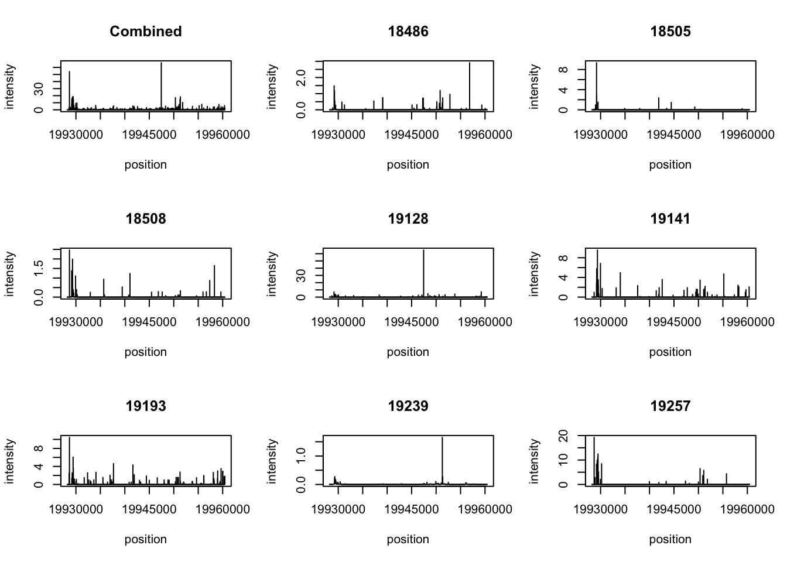

SMASH_smooth
Briana Mittleman
7/19/2018
Last updated: 2018-07-23
workflowr checks: (Click a bullet for more information)-
✔ R Markdown file: up-to-date
Great! Since the R Markdown file has been committed to the Git repository, you know the exact version of the code that produced these results.
-
✔ Environment: empty
Great job! The global environment was empty. Objects defined in the global environment can affect the analysis in your R Markdown file in unknown ways. For reproduciblity it’s best to always run the code in an empty environment.
-
✔ Seed:
set.seed(12345)The command
set.seed(12345)was run prior to running the code in the R Markdown file. Setting a seed ensures that any results that rely on randomness, e.g. subsampling or permutations, are reproducible. -
✔ Session information: recorded
Great job! Recording the operating system, R version, and package versions is critical for reproducibility.
-
Great! You are using Git for version control. Tracking code development and connecting the code version to the results is critical for reproducibility. The version displayed above was the version of the Git repository at the time these results were generated.✔ Repository version: 4a8b5c5
Note that you need to be careful to ensure that all relevant files for the analysis have been committed to Git prior to generating the results (you can usewflow_publishorwflow_git_commit). workflowr only checks the R Markdown file, but you know if there are other scripts or data files that it depends on. Below is the status of the Git repository when the results were generated:
Note that any generated files, e.g. HTML, png, CSS, etc., are not included in this status report because it is ok for generated content to have uncommitted changes.Ignored files: Ignored: .DS_Store Ignored: .RData Ignored: .Rhistory Ignored: .Rproj.user/ Ignored: data/.DS_Store Untracked files: Untracked: Ggsb_logo.r.pdf Untracked: Rplot.pdf Untracked: _workflowr.yml Untracked: analysis/filter_bam.Rmd Untracked: analysis/gencode.v19.annotation.proteincodinggene.saf Untracked: analysis/temp Untracked: analysis/top5_gen_wind200.bed Untracked: data/DaPars_APA_geuvadis.txt Untracked: data/Day7_cardiomyocytes_droNC_seq.bam Untracked: data/Day7_cardiomyocytes_droNC_seq.bam.bai Untracked: data/Day7_cardiomyocytes_drop_seq.bam Untracked: data/Day7_cardiomyocytes_drop_seq.bam.bai Untracked: data/LCL_3utr.txt Untracked: data/LCL_3utrAB.bed Untracked: data/LCL_3utrAB.neg.chr20.bed Untracked: data/LCL_3utrAB_pos.chr1.bed Untracked: data/LCL_3utrAB_pos.chr21.bed Untracked: data/NET3-18486.gene.coverage.bed Untracked: data/NET3-18486.gene.coverage.noSM.bed Untracked: data/NET3-18486.gene.coverage.nosn.nosno.bed Untracked: data/NET3-18486.gene.coverage.notopwind.bed Untracked: data/NET3-18486.tss.coverage.bed Untracked: data/NET3-18486_combined_Netpilot-sort.FC200.cov.bed Untracked: data/NET3-18486_combined_Netpilot-sort.FC200.cov.no0.bed Untracked: data/NET3-18486_combined_Netpilot-sort.exon.cov.txt Untracked: data/NET3-18505.gene.coverage.bed Untracked: data/NET3-18505_combined_Netpilot-sort.FC200.cov.no0.bed Untracked: data/NET3-18508_combined_Netpilot-sort.FC200.cov.no0.bed Untracked: data/NET3-19128_combined_Netpilot-sort.FC200.cov.no0.bed Untracked: data/NET3-19141_combined_Netpilot-sort.FC200.cov.no0.bed Untracked: data/NET3-19193_combined_Netpilot-sort.FC200.cov.no0.bed Untracked: data/NET3-19239_combined_Netpilot-sort.FC200.cov.no0.bed Untracked: data/NET3-19257_combined_Netpilot-sort.FC200.cov.no0.bed Untracked: data/RNAseqGeuvadis_STAR_18486.coverage.bed Untracked: data/RNAseqGeuvadis_STAR_18486.gene.coverage.bed Untracked: data/RefSeqGenes.bed Untracked: data/SRR1575922-sort.bam Untracked: data/SRR1575922-sort.bam.bai Untracked: data/SwitchGear_TSS.bed Untracked: data/UMI_18486_dep_stat.txt Untracked: data/UMI_18486_dep_stat_tab.txt Untracked: data/UMI_18508_dep_stat.txt Untracked: data/UMI_18508_nondep_stat.txt Untracked: data/UMI_19238_dep_stat.txt Untracked: data/UMI_Net3_18486_dedupstat.txt Untracked: data/UMI_Net3_18486_stat.txt Untracked: data/UMI_Net3_18505_dedupstat.txt Untracked: data/UMI_Net3_18505_stat.txt Untracked: data/UMI_Net3_18508_dedupstat.txt Untracked: data/UMI_Net3_18508_stat.txt Untracked: data/UMI_Net3_19128_dedupstat.txt Untracked: data/UMI_Net3_19128_stat.txt Untracked: data/UMI_Net3_19141_dedupstat.txt Untracked: data/UMI_Net3_19141_stat.txt Untracked: data/UMI_Net3_19193_dedupstat.txt Untracked: data/UMI_Net3_19193_stat.txt Untracked: data/UMI_Net3_19239_dedupstat.txt Untracked: data/UMI_Net3_19239_stat.txt Untracked: data/UMI_Net3_19257_dedupstat.txt Untracked: data/UMI_Net3_19257_stat.txt Untracked: data/UMI_mayer_stat.txt Untracked: data/YG-SP-NET1-18486-dep-2017-10-13_S4_R1_001-sort.dedup.cov.bed Untracked: data/YG-SP-NET3-18486_combined_Netpilot-sort.cov.AC093901.bed Untracked: data/YG-SP-NET3-18486_combined_Netpilot-sort.cov.BTRC.bed Untracked: data/YG-SP-NET3-18486_combined_Netpilot-sort.cov.RNU5B.bed Untracked: data/YG-SP-NET3-18486_combined_Netpilot-sort.cov.WDR74.bed Untracked: data/YG-SP-NET3-18486_combined_Netpilot-sort.cov.chr2.bed Untracked: data/YG-SP-NET3-18486_combined_Netpilot-sort.cov.insig2.bed Untracked: data/YG-SP-NET3-18486_combined_Netpilot-sort.cov.ppef2.bed Untracked: data/YG-SP-NET3-18486_combined_Netpilot-sort.cov.rnu259p.bed Untracked: data/YG-SP-NET3-18486_combined_Netpilot-sort.dedup.cov.insig2.bed Untracked: data/all_RNAmetrics.picard.none.csv Untracked: data/all_files.APA500.coverage.bed Untracked: data/all_files_coverage.bed Untracked: data/all_strand_genecounts_18486.txt Untracked: data/bam_files_chr/ Untracked: data/blcl.hg38.sorted.bam Untracked: data/blcl.hg38.sorted.bam.bai Untracked: data/cell_growth_3.21.18.csv Untracked: data/clip_18486_dep.txt Untracked: data/clusters.bed Untracked: data/clusters.hg38 Untracked: data/clusters.hg38.3utr.neg.bed Untracked: data/clusters.hg38.3utr.pos.bed Untracked: data/clusters.hg38.bed Untracked: data/dedup_18486_mapqual.txt Untracked: data/drop7_cardio_3utr.txt Untracked: data/drop7_cardio_3utrAB.neg.chr21.bed Untracked: data/drop7_cardio_3utrAB.pos.chr21.bed Untracked: data/ensembl2refseq.txt Untracked: data/eqtl_fullgene/ Untracked: data/eqtl_genes_effectsize.txt Untracked: data/eqtl_output.cis.txt Untracked: data/eqtl_output.txt Untracked: data/eqtl_strand_spec/ Untracked: data/exon_cov/ Untracked: data/fc_genecov/ Untracked: data/gencode.v19.annotation.distfilteredgenes.bed Untracked: data/gencode.v19.annotation.egqtlfilter.bed Untracked: data/gencode.v19.annotation.eqtlfilter.bed Untracked: data/gencov_18486.bed Untracked: data/gene_cov_count/ Untracked: data/gene_coverage_18486_dedup_hist.txt Untracked: data/gene_coverage_18486_hist.txt Untracked: data/gene_coverage_18508_dep.txt Untracked: data/gene_coverage_18508_dep_hist.txt Untracked: data/gene_coverage_18508_nondep_hist.txt Untracked: data/gene_coverage_19238_dep_hist.txt Untracked: data/gene_coverage_mayer_SRR1575922_hist.txt Untracked: data/gene_dedup_cov_count/ Untracked: data/genotypes.rs7144811.txt Untracked: data/growth_curve_3.16.csv Untracked: data/hES.hg38.sorted.bam Untracked: data/hES.hg38.sorted.bam.bai Untracked: data/hg19.GM72.CTCF Untracked: data/hg19.ref.genes.bed Untracked: data/insig2sec.txt Untracked: data/mapped_18486_dep.txt Untracked: data/mapped_18486_dep_max.txt Untracked: data/mapped_18508_dep.txt Untracked: data/mapped_19238_dep.txt Untracked: data/mapped_mayer.txt Untracked: data/mapped_qual_18486.txt Untracked: data/mapped_qual_18505.txt Untracked: data/mapped_qual_18508.txt Untracked: data/mapped_qual_19128.txt Untracked: data/mapped_qual_19141.txt Untracked: data/mapped_qual_19193.txt Untracked: data/mapped_qual_19239.txt Untracked: data/mapped_qual_19257.txt Untracked: data/matrix_expression.txt Untracked: data/matrix_genotypes.csv Untracked: data/matrix_genotypes.txt Untracked: data/merged_Net1.bam Untracked: data/merged_Net1.bam.bai Untracked: data/meta_info_coverage.bed Untracked: data/names_geno.txt Untracked: data/net-3-readmap/ Untracked: data/net1_18486_dep_dedup.bed Untracked: data/net1_18486_dep_dedup_chr.bed Untracked: data/net4_readcounts.xlsx Untracked: data/net_pilot_eqtl_expression.bed Untracked: data/net_pilot_eqtl_genotypes.vcf Untracked: data/netcomb_intronicbases.csv Untracked: data/opp_strand_genecounts_18486.txt Untracked: data/opp_strand_genecounts_18505.txt Untracked: data/opp_strand_genecounts_filt_18486.txt Untracked: data/perc_alive_3.16.csv Untracked: data/prom_coverage/ Untracked: data/qual_18486_dep.txt Untracked: data/qual_18508_dep.txt Untracked: data/qual_19238_dep.txt Untracked: data/qual_mayer.txt Untracked: data/refseq_250up.bed Untracked: data/run_lm_APA.txt Untracked: data/same_strand_genecounts_18486.txt Untracked: data/same_strand_genecounts_18505.txt Untracked: data/same_strand_genecounts_filt_18486.txt Untracked: data/smash_test/ Untracked: data/sort_dedup_3prime_chr2_no0.18486.txt Untracked: data/sort_dedup_chr2_no0_18486.txt Untracked: data/test.txt Untracked: data/three_prime_utr.bed Untracked: data/top5_exonlist.txt Untracked: data/top5_exonlist_18486_fiveprime_cov.txt Untracked: data/top5_exonlist_18486_fiveprime_cov2.txt Untracked: data/top5_exonlist_18486_fiveprime_cov2_filter.txt Untracked: data/top5_exonlist_18486_threeprime_cov.txt Untracked: data/top5_exonlist_18486_threeprime_cov2.txt Untracked: data/top5_exonlist_18486_threeprime_cov2_filter.txt Untracked: data/top5_gen_wind200.bed Untracked: data/top5_gen_wind200.tab.bed Untracked: data/uniq_genes/ Untracked: data/windows_200/ Untracked: docs/temp Untracked: docs/top5_gen_wind200.bed Untracked: output/Rs7144811_apa_usage.pdf Untracked: output/picard.accrossgenebodies.netpilot.csv Unstaged changes: Modified: analysis/APA_qtl_RNAseq.Rmd Modified: analysis/LCL_growth.Rmd Modified: analysis/Net_3_explore.Rmd Modified: analysis/Reads_per_pas.Rmd Modified: analysis/UTR_coverage.Rmd Modified: analysis/_site.yml Modified: analysis/about.Rmd Modified: analysis/bin_windows.Rmd Modified: analysis/check_bamid.Rmd Deleted: analysis/chunks.R Modified: analysis/conda.environment.Rmd Modified: analysis/config.snake.setup.Rmd Modified: analysis/create_blacklist.Rmd Modified: analysis/data_for_ggplot.Rmd Modified: analysis/eqtl_bystrand.Rmd Modified: analysis/explore_umi_usage.Rmd Modified: analysis/extend_APA_qtl.Rmd Modified: analysis/gviz_plots.Rmd Modified: analysis/initial.data.exploration.Rmd Modified: analysis/license.Rmd Modified: analysis/map_stats_from_bam.Rmd Modified: analysis/reads_in_genes.Rmd Modified: analysis/recreate_mayer_figs.Rmd Modified: analysis/strand_spec.Rmd Modified: analysis/test-analysis.Rmd Modified: analysis/three_prime_UTR.Rmd Modified: analysis/update_snakefile.Rmd Modified: analysis/use_deeptools.Rmd Modified: analysis/visualize_genomefeatures.Rmd
Expand here to see past versions:
Use SMASH to smooth regions of the Netseq data.
I want to use the first 8 lines (NET3)
18505
18508
18486
19239
19141
19193
19257
19128
The coverage files I need to make the matrix are in /project2/gilad/briana/Net-seq-pilot/data/cov.
ACTB
I am going to look at the region chr7:5,565,291-5,573,483 around the actb gene.
#!/bin/bash
#SBATCH --job-name=testsmash.actb
#SBATCH --account=pi-yangili1
#SBATCH --time=24:00:00
#SBATCH --output=testsmash.actb.out
#SBATCH --error=testsmash.actb.err
#SBATCH --partition=broadwl
#SBATCH --mem=20G
#SBATCH --mail-type=END
awk '$1 == 7 && $2 >= 5565291 && $2 <= 5573483 {print}' /project2/gilad/briana/Net-seq-pilot/data/cov/YG-SP-NET3-18486_combined_Netpilot-sort.cov.bed > /project2/gilad/briana/Net-seq-pilot/data/smash.test/YG-SP-NET3-18486_combined_Netpilot-actb.bed
awk '$1 == 7 && $2 >= 5565291 && $2 <= 5573483 {print}' /project2/gilad/briana/Net-seq-pilot/data/cov/YG-SP-NET3-18505_combined_Netpilot-sort.cov.bed > /project2/gilad/briana/Net-seq-pilot/data/smash.test/YG-SP-NET3-18505_combined_Netpilot-actb.bed
awk '$1 == 7 && $2 >= 5565291 && $2 <= 5573483 {print}' /project2/gilad/briana/Net-seq-pilot/data/cov/YG-SP-NET3-18508_combined_Netpilot-sort.cov.bed > /project2/gilad/briana/Net-seq-pilot/data/smash.test/YG-SP-NET3-18508_combined_Netpilot-actb.bed
awk '$1 == 7 && $2 >= 5565291 && $2 <= 5573483 {print}' /project2/gilad/briana/Net-seq-pilot/data/cov/YG-SP-NET3-19128_combined_Netpilot-sort.cov.bed > /project2/gilad/briana/Net-seq-pilot/data/smash.test/YG-SP-NET3-19128_combined_Netpilot-sort.actb.bed
awk '$1 == 7 && $2 >= 5565291 && $2 <= 5573483 {print}' /project2/gilad/briana/Net-seq-pilot/data/cov/YG-SP-NET3-19141_combined_Netpilot-sort.cov.bed > /project2/gilad/briana/Net-seq-pilot/data/smash.test/YG-SP-NET3-19141_combined_Netpilot.actb.bed
awk '$1 == 7 && $2 >= 5565291 && $2 <= 5573483 {print}' /project2/gilad/briana/Net-seq-pilot/data/cov/YG-SP-NET3-19193_combined_Netpilot-sort.cov.bed > /project2/gilad/briana/Net-seq-pilot/data/smash.test/YG-SP-NET3-19193_combined_Netpilot.actb.bed
awk '$1 == 7 && $2 >= 5565291 && $2 <= 5573483 {print}' /project2/gilad/briana/Net-seq-pilot/data/cov/YG-SP-NET3-19239_combined_Netpilot-sort.cov.bed > /project2/gilad/briana/Net-seq-pilot/data/smash.test/YG-SP-NET3-19239_combined_Netpilot.actb.bed
awk '$1 == 7 && $2 >= 5565291 && $2 <= 5573483 {print}' /project2/gilad/briana/Net-seq-pilot/data/cov/YG-SP-NET3-19257_combined_Netpilot-sort.cov.bed > /project2/gilad/briana/Net-seq-pilot/data/smash.test/YG-SP-NET3-19257_combined_Netpilot.actb.bedLoad Packages:
library(devtools)Warning: package 'devtools' was built under R version 3.4.4library(scales)
library(smashr)
library(tidyr)
library(workflowr)Loading required package: rmarkdownThis is workflowr version 1.0.1
Run ?workflowr for help getting startedlibrary(dplyr)Warning: package 'dplyr' was built under R version 3.4.4
Attaching package: 'dplyr'The following objects are masked from 'package:stats':
filter, lagThe following objects are masked from 'package:base':
intersect, setdiff, setequal, unionactb_18486=read.table("../data/smash_test/YG-SP-NET3-18486_combined_Netpilot-actb.bed", col.names=c("chr", "base", "net18486"))
actb_18505=read.table("../data/smash_test/YG-SP-NET3-18505_combined_Netpilot-actb.bed", col.names=c("chr", "base", "net18505"))
actb_18508=read.table("../data/smash_test/YG-SP-NET3-18508_combined_Netpilot-actb.bed", col.names=c("chr", "base", "net18508"))
actb_19128=read.table("../data/smash_test/YG-SP-NET3-19128_combined_Netpilot.actb.bed", col.names=c("chr", "base", "net19128"))
actb_19141=read.table("../data/smash_test/YG-SP-NET3-19141_combined_Netpilot.actb.bed", col.names=c("chr", "base", "net19141"))
actb_19193=read.table("../data/smash_test/YG-SP-NET3-19193_combined_Netpilot.actb.bed", col.names=c("chr", "base", "net19193"))
actb_19239=read.table("../data/smash_test/YG-SP-NET3-19239_combined_Netpilot.actb.bed", col.names=c("chr", "base", "net19239"))
actb_19257=read.table("../data/smash_test/YG-SP-NET3-19257_combined_Netpilot.actb.bed", col.names=c("chr", "base", "net19257"))Make matrix
actb_matrix=cbind(actb_18486$net18486, actb_18505$net18505,actb_18508$net18508, actb_19128$net19128, actb_19141$net19141,actb_19193$net19193, actb_19239$net19239, actb_19257$net19257) %>%twrite the matrix out:
#write.table(actb_matrix, "../data/smash_test/actb_countmatrix.txt", quote = F, row.names = F, col.names = F)Run smash:
actb_res = smash.poiss(actb_matrix[1,]+actb_matrix[2,]+ actb_matrix[3,]+ actb_matrix[4,]+actb_matrix[5,]+actb_matrix[6,]+actb_matrix[7,]+actb_matrix[8,], post.var=TRUE)Due to absence of package REBayes, switching to EM algorithm
Due to absence of package REBayes, switching to EM algorithm
Due to absence of package REBayes, switching to EM algorithm
Due to absence of package REBayes, switching to EM algorithm
Due to absence of package REBayes, switching to EM algorithm
Due to absence of package REBayes, switching to EM algorithm
Due to absence of package REBayes, switching to EM algorithm
Due to absence of package REBayes, switching to EM algorithm
Due to absence of package REBayes, switching to EM algorithm
Due to absence of package REBayes, switching to EM algorithm
Due to absence of package REBayes, switching to EM algorithm
Due to absence of package REBayes, switching to EM algorithm
Due to absence of package REBayes, switching to EM algorithm
Due to absence of package REBayes, switching to EM algorithm
Due to absence of package REBayes, switching to EM algorithmregion=5565291:5573483
plot(region,actb_res$est,type='l',xlab="position",ylab="intensity", main="SMASH results ACTB")
Expand here to see past versions of unnamed-chunk-7-1.png:
| Version | Author | Date |
|---|---|---|
| 81d39d2 | Briana Mittleman | 2018-07-19 |
Next I want to run it seperatly for all 8 individuals and plot them together to see if the peaks line up.
actb_res1 = smash.poiss(actb_matrix[1,], post.var=TRUE)Due to absence of package REBayes, switching to EM algorithm
Due to absence of package REBayes, switching to EM algorithm
Due to absence of package REBayes, switching to EM algorithm
Due to absence of package REBayes, switching to EM algorithm
Due to absence of package REBayes, switching to EM algorithm
Due to absence of package REBayes, switching to EM algorithm
Due to absence of package REBayes, switching to EM algorithm
Due to absence of package REBayes, switching to EM algorithm
Due to absence of package REBayes, switching to EM algorithm
Due to absence of package REBayes, switching to EM algorithm
Due to absence of package REBayes, switching to EM algorithm
Due to absence of package REBayes, switching to EM algorithm
Due to absence of package REBayes, switching to EM algorithm
Due to absence of package REBayes, switching to EM algorithm
Due to absence of package REBayes, switching to EM algorithmactb_res2 = smash.poiss(actb_matrix[2,], post.var=TRUE)Due to absence of package REBayes, switching to EM algorithm
Due to absence of package REBayes, switching to EM algorithm
Due to absence of package REBayes, switching to EM algorithm
Due to absence of package REBayes, switching to EM algorithm
Due to absence of package REBayes, switching to EM algorithm
Due to absence of package REBayes, switching to EM algorithm
Due to absence of package REBayes, switching to EM algorithm
Due to absence of package REBayes, switching to EM algorithm
Due to absence of package REBayes, switching to EM algorithm
Due to absence of package REBayes, switching to EM algorithm
Due to absence of package REBayes, switching to EM algorithm
Due to absence of package REBayes, switching to EM algorithm
Due to absence of package REBayes, switching to EM algorithm
Due to absence of package REBayes, switching to EM algorithm
Due to absence of package REBayes, switching to EM algorithmactb_res3 = smash.poiss(actb_matrix[3,], post.var=TRUE)Due to absence of package REBayes, switching to EM algorithm
Due to absence of package REBayes, switching to EM algorithm
Due to absence of package REBayes, switching to EM algorithm
Due to absence of package REBayes, switching to EM algorithm
Due to absence of package REBayes, switching to EM algorithm
Due to absence of package REBayes, switching to EM algorithm
Due to absence of package REBayes, switching to EM algorithm
Due to absence of package REBayes, switching to EM algorithm
Due to absence of package REBayes, switching to EM algorithm
Due to absence of package REBayes, switching to EM algorithm
Due to absence of package REBayes, switching to EM algorithm
Due to absence of package REBayes, switching to EM algorithm
Due to absence of package REBayes, switching to EM algorithm
Due to absence of package REBayes, switching to EM algorithm
Due to absence of package REBayes, switching to EM algorithmactb_res4 = smash.poiss(actb_matrix[4,], post.var=TRUE)Due to absence of package REBayes, switching to EM algorithm
Due to absence of package REBayes, switching to EM algorithm
Due to absence of package REBayes, switching to EM algorithm
Due to absence of package REBayes, switching to EM algorithm
Due to absence of package REBayes, switching to EM algorithm
Due to absence of package REBayes, switching to EM algorithm
Due to absence of package REBayes, switching to EM algorithm
Due to absence of package REBayes, switching to EM algorithm
Due to absence of package REBayes, switching to EM algorithm
Due to absence of package REBayes, switching to EM algorithm
Due to absence of package REBayes, switching to EM algorithm
Due to absence of package REBayes, switching to EM algorithm
Due to absence of package REBayes, switching to EM algorithm
Due to absence of package REBayes, switching to EM algorithm
Due to absence of package REBayes, switching to EM algorithmactb_res5 = smash.poiss(actb_matrix[5,], post.var=TRUE)Due to absence of package REBayes, switching to EM algorithm
Due to absence of package REBayes, switching to EM algorithm
Due to absence of package REBayes, switching to EM algorithm
Due to absence of package REBayes, switching to EM algorithm
Due to absence of package REBayes, switching to EM algorithm
Due to absence of package REBayes, switching to EM algorithm
Due to absence of package REBayes, switching to EM algorithm
Due to absence of package REBayes, switching to EM algorithm
Due to absence of package REBayes, switching to EM algorithm
Due to absence of package REBayes, switching to EM algorithm
Due to absence of package REBayes, switching to EM algorithm
Due to absence of package REBayes, switching to EM algorithm
Due to absence of package REBayes, switching to EM algorithm
Due to absence of package REBayes, switching to EM algorithm
Due to absence of package REBayes, switching to EM algorithmactb_res6 = smash.poiss(actb_matrix[6,], post.var=TRUE)Due to absence of package REBayes, switching to EM algorithm
Due to absence of package REBayes, switching to EM algorithm
Due to absence of package REBayes, switching to EM algorithm
Due to absence of package REBayes, switching to EM algorithm
Due to absence of package REBayes, switching to EM algorithm
Due to absence of package REBayes, switching to EM algorithm
Due to absence of package REBayes, switching to EM algorithm
Due to absence of package REBayes, switching to EM algorithm
Due to absence of package REBayes, switching to EM algorithm
Due to absence of package REBayes, switching to EM algorithm
Due to absence of package REBayes, switching to EM algorithm
Due to absence of package REBayes, switching to EM algorithm
Due to absence of package REBayes, switching to EM algorithm
Due to absence of package REBayes, switching to EM algorithm
Due to absence of package REBayes, switching to EM algorithmactb_res7 = smash.poiss(actb_matrix[7,], post.var=TRUE)Due to absence of package REBayes, switching to EM algorithm
Due to absence of package REBayes, switching to EM algorithm
Due to absence of package REBayes, switching to EM algorithm
Due to absence of package REBayes, switching to EM algorithm
Due to absence of package REBayes, switching to EM algorithm
Due to absence of package REBayes, switching to EM algorithm
Due to absence of package REBayes, switching to EM algorithm
Due to absence of package REBayes, switching to EM algorithm
Due to absence of package REBayes, switching to EM algorithm
Due to absence of package REBayes, switching to EM algorithm
Due to absence of package REBayes, switching to EM algorithm
Due to absence of package REBayes, switching to EM algorithm
Due to absence of package REBayes, switching to EM algorithm
Due to absence of package REBayes, switching to EM algorithm
Due to absence of package REBayes, switching to EM algorithmactb_res8 = smash.poiss(actb_matrix[8,], post.var=TRUE)Due to absence of package REBayes, switching to EM algorithm
Due to absence of package REBayes, switching to EM algorithm
Due to absence of package REBayes, switching to EM algorithm
Due to absence of package REBayes, switching to EM algorithm
Due to absence of package REBayes, switching to EM algorithm
Due to absence of package REBayes, switching to EM algorithm
Due to absence of package REBayes, switching to EM algorithm
Due to absence of package REBayes, switching to EM algorithm
Due to absence of package REBayes, switching to EM algorithm
Due to absence of package REBayes, switching to EM algorithm
Due to absence of package REBayes, switching to EM algorithm
Due to absence of package REBayes, switching to EM algorithm
Due to absence of package REBayes, switching to EM algorithm
Due to absence of package REBayes, switching to EM algorithm
Due to absence of package REBayes, switching to EM algorithmMake results matrix:
res_matrix=rbind(actb_res$est,actb_res1$est,actb_res2$est,actb_res3$est,actb_res4$est,actb_res5$est,actb_res6$est,actb_res7$est,actb_res8$est)
#write.table(res_matrix, "../data/smash_test/actb_smash_res.txt", quote = F, col.names = F, row.names = F, sep="\t")par(mfrow=c(3,3))
plot(region,actb_res$est,type='l',xlab="position",ylab="intensity", main="Combined")
plot(region,actb_res1$est,type='l',xlab="position",ylab="intensity", main="18486")
plot(region,actb_res2$est,type='l',xlab="position",ylab="intensity",main="18505")
plot(region,actb_res3$est,type='l',xlab="position",ylab="intensity",main="18508")
plot(region,actb_res4$est,type='l',xlab="position",ylab="intensity",main="19128")
plot(region,actb_res5$est,type='l',xlab="position",ylab="intensity",main="19141")
plot(region,actb_res6$est,type='l',xlab="position",ylab="intensity",main="19193")
plot(region,actb_res7$est,type='l',xlab="position",ylab="intensity",main="19239")
plot(region,actb_res8$est,type='l',xlab="position",ylab="intensity",main="19257")
Expand here to see past versions of unnamed-chunk-10-1.png:
| Version | Author | Date |
|---|---|---|
| 81d39d2 | Briana Mittleman | 2018-07-19 |
I also am going to run it on the Mayer hek data.
#!/bin/bash
#SBATCH --job-name=testsmash.actb
#SBATCH --account=pi-yangili1
#SBATCH --time=24:00:00
#SBATCH --output=testsmash.actb.out
#SBATCH --error=testsmash.actb.err
#SBATCH --partition=broadwl
#SBATCH --mem=20G
#SBATCH --mail-type=END
awk '$1 == 7 && $2 >= 5565291 && $2 <= 5573483 {print}' /project2/gilad/briana/mayer.data/mayer_hek/data/cov/mayer_hek-sort.dedup.cov.bed > /project2/gilad/briana/mayer.data/mayer_hek/data/mayer_hek-dedup-smashactb.bedThis is not the correct coverage file to run this on. I need to make a genome coverage file of the data then I can run this.
COMT
Second gene to look at COMT chr22:19,928,209-19,960,444
#!/bin/bash
#SBATCH --job-name=testsmash.comt
#SBATCH --account=pi-yangili1
#SBATCH --time=24:00:00
#SBATCH --output=testsmash.comt.out
#SBATCH --error=testsmash.comt.err
#SBATCH --partition=broadwl
#SBATCH --mem=20G
#SBATCH --mail-type=END
awk '$1 == 22 && $2 >= 19928209 && $2 <= 19960444 {print}' /project2/gilad/briana/Net-seq-pilot/data/cov/YG-SP-NET3-18486_combined_Netpilot-sort.cov.bed > /project2/gilad/briana/Net-seq-pilot/data/smash.test/YG-SP-NET3-18486_combined_Netpilot.comt.bed
awk '$1 == 22 && $2 >= 19928209 && $2 <= 19960444 {print}' /project2/gilad/briana/Net-seq-pilot/data/cov/YG-SP-NET3-18505_combined_Netpilot-sort.cov.bed > /project2/gilad/briana/Net-seq-pilot/data/smash.test/YG-SP-NET3-18505_combined_Netpilot.comt.bed
awk '$1 == 22 && $2 >= 19928209 && $2 <= 19960444 {print}' /project2/gilad/briana/Net-seq-pilot/data/cov/YG-SP-NET3-18508_combined_Netpilot-sort.cov.bed > /project2/gilad/briana/Net-seq-pilot/data/smash.test/YG-SP-NET3-18508_combined_Netpilot.comt.bed
awk '$1 == 22 && $2 >= 19928209 && $2 <= 19960444 {print}' /project2/gilad/briana/Net-seq-pilot/data/cov/YG-SP-NET3-19128_combined_Netpilot-sort.cov.bed > /project2/gilad/briana/Net-seq-pilot/data/smash.test/YG-SP-NET3-19128_combined_Netpilot.comt.bed
awk '$1 == 22 && $2 >= 19928209 && $2 <= 19960444 {print}' /project2/gilad/briana/Net-seq-pilot/data/cov/YG-SP-NET3-19141_combined_Netpilot-sort.cov.bed > /project2/gilad/briana/Net-seq-pilot/data/smash.test/YG-SP-NET3-19141_combined_Netpilot.comt.bed
awk '$1 == 22 && $2 >= 19928209 && $2 <= 19960444 {print}' /project2/gilad/briana/Net-seq-pilot/data/cov/YG-SP-NET3-19193_combined_Netpilot-sort.cov.bed > /project2/gilad/briana/Net-seq-pilot/data/smash.test/YG-SP-NET3-19193_combined_Netpilot.comt.bed
awk '$1 == 22 && $2 >= 19928209 && $2 <= 19960444 {print}' /project2/gilad/briana/Net-seq-pilot/data/cov/YG-SP-NET3-19239_combined_Netpilot-sort.cov.bed > /project2/gilad/briana/Net-seq-pilot/data/smash.test/YG-SP-NET3-19239_combined_Netpilot.comt.bed
awk '$1 == 22 && $2 >= 19928209 && $2 <= 19960444 {print}' /project2/gilad/briana/Net-seq-pilot/data/cov/YG-SP-NET3-19257_combined_Netpilot-sort.cov.bed > /project2/gilad/briana/Net-seq-pilot/data/smash.test/YG-SP-NET3-19257_combined_Netpilot.comt.bed
comt_18486=read.table("../data/smash_test/YG-SP-NET3-18486_combined_Netpilot-comt.bed", col.names=c("chr", "base", "net18486"))
comt_18505=read.table("../data/smash_test/YG-SP-NET3-18505_combined_Netpilot-comt.bed", col.names=c("chr", "base", "net18505"))
comt_18508=read.table("../data/smash_test/YG-SP-NET3-18508_combined_Netpilot-comt.bed", col.names=c("chr", "base", "net18508"))
comt_19128=read.table("../data/smash_test/YG-SP-NET3-19128_combined_Netpilot-comt.bed", col.names=c("chr", "base", "net19128"))
comt_19141=read.table("../data/smash_test/YG-SP-NET3-19141_combined_Netpilot.comt.bed", col.names=c("chr", "base", "net19141"))
comt_19193=read.table("../data/smash_test/YG-SP-NET3-19193_combined_Netpilot-comt.bed", col.names=c("chr", "base", "net19193"))
comt_19239=read.table("../data/smash_test/YG-SP-NET3-19239_combined_Netpilot.comt.bed", col.names=c("chr", "base", "net19239"))
comt_19257=read.table("../data/smash_test/YG-SP-NET3-19257_combined_Netpilot.comt.bed", col.names=c("chr", "base", "net19257"))Make matrix
comt_matrix=cbind(comt_18486$net18486, comt_18505$net18505,comt_18508$net18508, comt_19128$net19128, comt_19141$net19141,comt_19193$net19193, comt_19239$net19239, comt_19257$net19257) %>%twrite the matrix out:
#write.table(comt_matrix, "../data/smash_test/comt_countmatrix.txt", quote = F, row.names = F, col.names = F)Run smash:
comt_res = smash.poiss(comt_matrix[1,]+comt_matrix[2,]+ comt_matrix[3,]+ comt_matrix[4,]+comt_matrix[5,]+comt_matrix[6,]+comt_matrix[7,]+comt_matrix[8,], post.var=TRUE)Due to absence of package REBayes, switching to EM algorithm
Due to absence of package REBayes, switching to EM algorithm
Due to absence of package REBayes, switching to EM algorithm
Due to absence of package REBayes, switching to EM algorithm
Due to absence of package REBayes, switching to EM algorithm
Due to absence of package REBayes, switching to EM algorithm
Due to absence of package REBayes, switching to EM algorithm
Due to absence of package REBayes, switching to EM algorithmSquarem-1
Objective fn: 90950.4
Objective fn: 65845.3 Extrapolation: 0 Steplength: 1
Objective fn: 24851.8 Extrapolation: 1 Steplength: 3.84547
Objective fn: 24062.8 Extrapolation: 1 Steplength: 4
Objective fn: 23943.2 Extrapolation: 0 Steplength: 1
Objective fn: 23508.8 Extrapolation: 1 Steplength: 4
Objective fn: 23031.8 Extrapolation: 1 Steplength: 16
Objective fn: 23016.8 Extrapolation: 1 Steplength: 10.7995
Objective fn: 23016 Extrapolation: 1 Steplength: 21.1759
Objective fn: 23016 Extrapolation: 1 Steplength: 13.7289Due to absence of package REBayes, switching to EM algorithmSquarem-1
Objective fn: 130718
Objective fn: 78834.8 Extrapolation: 0 Steplength: 1
Objective fn: 33501.7 Extrapolation: 1 Steplength: 2.63033
Objective fn: 31887.4 Extrapolation: 1 Steplength: 4
Objective fn: 31340.9 Extrapolation: 1 Steplength: 16
Objective fn: 31288.7 Extrapolation: 1 Steplength: 6.61228
Objective fn: 31284.7 Extrapolation: 1 Steplength: 22.8899
Objective fn: 31283.1 Extrapolation: 1 Steplength: 7.75947
Objective fn: 31281.9 Extrapolation: 1 Steplength: 39.7414
Objective fn: 31281.4 Extrapolation: 1 Steplength: 16.5577
Objective fn: 31280.9 Extrapolation: 1 Steplength: 17.333
Objective fn: 31280.5 Extrapolation: 1 Steplength: 16.0379
Objective fn: 31280.1 Extrapolation: 1 Steplength: 17.4176
Objective fn: 31279.7 Extrapolation: 1 Steplength: 15.4404
Objective fn: 31279.3 Extrapolation: 1 Steplength: 17.7865
Objective fn: 31279 Extrapolation: 1 Steplength: 14.6529
Objective fn: 31278.7 Extrapolation: 1 Steplength: 18.6717
Objective fn: 31278.5 Extrapolation: 1 Steplength: 13.5897
Objective fn: 31278.3 Extrapolation: 1 Steplength: 20.6189
Objective fn: 31278.1 Extrapolation: 1 Steplength: 12.2073
Objective fn: 31277.9 Extrapolation: 1 Steplength: 24.9889
Objective fn: 31277.8 Extrapolation: 1 Steplength: 10.6156
Objective fn: 31277.7 Extrapolation: 1 Steplength: 35.495
Objective fn: 31277.6 Extrapolation: 1 Steplength: 9.16359
Objective fn: 31277.4 Extrapolation: 1 Steplength: 61.0227
Objective fn: 31277.4 Extrapolation: 1 Steplength: 8.22209
Objective fn: 31277.2 Extrapolation: 1 Steplength: 64
Objective fn: 31277.2 Extrapolation: 1 Steplength: 8.75721
Objective fn: 31277 Extrapolation: 1 Steplength: 75.4196
Objective fn: 31277 Extrapolation: 1 Steplength: 7.96013
Objective fn: 31276.4 Extrapolation: 1 Steplength: 256
Objective fn: 31276.4 Extrapolation: 1 Steplength: 7.46265
Objective fn: 31276.7 Extrapolation: 1 Steplength: 1024
Objective fn: 31275.1 Extrapolation: 1 Steplength: 8.18721
Objective fn: 31274.9 Extrapolation: 1 Steplength: 23.4444
Objective fn: 31274.8 Extrapolation: 1 Steplength: 7.67938
Objective fn: 31274.8 Extrapolation: 1 Steplength: 136.716
Objective fn: 31274.8 Extrapolation: 1 Steplength: 33.7379
Objective fn: 31274.8 Extrapolation: 1 Steplength: 7.36687
Objective fn: 31274.7 Extrapolation: 1 Steplength: 210.092
Objective fn: 31274.7 Extrapolation: 1 Steplength: 9.40324
Objective fn: 31274.7 Extrapolation: 1 Steplength: 22.0485
Objective fn: 31274.7 Extrapolation: 1 Steplength: 8.48897
Objective fn: 31274.7 Extrapolation: 1 Steplength: 127.939
Objective fn: 31274.7 Extrapolation: 1 Steplength: 9.78421
Objective fn: 31274.7 Extrapolation: 1 Steplength: 27.8632
Objective fn: 31274.7 Extrapolation: 1 Steplength: 8.81498
Objective fn: 31274.7 Extrapolation: 1 Steplength: 352.601
Objective fn: 31274.7 Extrapolation: 1 Steplength: 8.11739
Objective fn: 31274.7 Extrapolation: 1 Steplength: 31.9697
Objective fn: 31274.7 Extrapolation: 1 Steplength: 10.2002
Objective fn: 31274.7 Extrapolation: 1 Steplength: 108.868
Objective fn: 31274.7 Extrapolation: 1 Steplength: 7.49104
Objective fn: 31274.7 Extrapolation: 1 Steplength: 317.259
Objective fn: 31274.7 Extrapolation: 1 Steplength: 9.07511
Objective fn: 31274.7 Extrapolation: 1 Steplength: 24.3253
Objective fn: 31274.7 Extrapolation: 1 Steplength: 7.98118
Objective fn: 31274.7 Extrapolation: 1 Steplength: 140.661
Objective fn: 31274.7 Extrapolation: 1 Steplength: 20.8416
Objective fn: 31274.7 Extrapolation: 1 Steplength: 9.00772
Objective fn: 31274.7 Extrapolation: 1 Steplength: 109.012
Objective fn: 31274.7 Extrapolation: 1 Steplength: 8.03476
Objective fn: 31274.7 Extrapolation: 1 Steplength: 74.4387
Objective fn: 31274.6 Extrapolation: 1 Steplength: 18.3542
Objective fn: 31274.6 Extrapolation: 1 Steplength: 12.5957
Objective fn: 31274.6 Extrapolation: 1 Steplength: 36.8144
Objective fn: 31274.6 Extrapolation: 1 Steplength: 6.9096
Objective fn: 31274.6 Extrapolation: 1 Steplength: 335.343
Objective fn: 31274.6 Extrapolation: 1 Steplength: 7.66959
Objective fn: 31274.6 Extrapolation: 1 Steplength: 687.923
Objective fn: 31274.6 Extrapolation: 1 Steplength: 7.88386
Objective fn: 31274.6 Extrapolation: 1 Steplength: 33.2972
Objective fn: 31274.6 Extrapolation: 1 Steplength: 13.823
Objective fn: 31274.6 Extrapolation: 1 Steplength: 26.2679
Objective fn: 31274.6 Extrapolation: 1 Steplength: 7.24372
Objective fn: 31274.6 Extrapolation: 1 Steplength: 1701.88
Objective fn: 31274.6 Extrapolation: 1 Steplength: 7.79551
Objective fn: 31274.6 Extrapolation: 1 Steplength: 24.8362
Objective fn: 31274.6 Extrapolation: 1 Steplength: 7.39565
Objective fn: 31274.6 Extrapolation: 1 Steplength: 186.853
Objective fn: 31274.6 Extrapolation: 1 Steplength: 21.5008
Objective fn: 31274.6 Extrapolation: 1 Steplength: 8.33897
Objective fn: 31274.6 Extrapolation: 1 Steplength: 56.5133
Objective fn: 31274.6 Extrapolation: 1 Steplength: 13.1332
Objective fn: 31274.6 Extrapolation: 1 Steplength: 32.0499
Objective fn: 31274.6 Extrapolation: 1 Steplength: 6.8691
Objective fn: 31274.6 Extrapolation: 1 Steplength: 383.597
Objective fn: 31274.6 Extrapolation: 1 Steplength: 7.68822
Objective fn: 31274.6 Extrapolation: 1 Steplength: 625.142
Objective fn: 31274.6 Extrapolation: 1 Steplength: 9.9618
Objective fn: 31274.6 Extrapolation: 1 Steplength: 19.0307
Objective fn: 31274.6 Extrapolation: 1 Steplength: 8.77211
Objective fn: 31274.6 Extrapolation: 1 Steplength: 24.8222
Objective fn: 31274.6 Extrapolation: 1 Steplength: 24.6293
Objective fn: 31274.6 Extrapolation: 1 Steplength: 6.70931
Objective fn: 31274.6 Extrapolation: 1 Steplength: 415.965
Objective fn: 31274.6 Extrapolation: 1 Steplength: 7.66138
Objective fn: 31274.6 Extrapolation: 1 Steplength: 100.595
Objective fn: 31274.6 Extrapolation: 1 Steplength: 17.1246
Objective fn: 31274.6 Extrapolation: 1 Steplength: 9.67566Due to absence of package REBayes, switching to EM algorithmSquarem-1
Objective fn: 160311
Objective fn: 76247.4 Extrapolation: 0 Steplength: 1
Objective fn: 36394.1 Extrapolation: 1 Steplength: 2.42828
Objective fn: 33891.4 Extrapolation: 1 Steplength: 4
Objective fn: 33458.6 Extrapolation: 1 Steplength: 8.46495
Objective fn: 33397.4 Extrapolation: 1 Steplength: 10.7442
Objective fn: 33373.8 Extrapolation: 1 Steplength: 16
Objective fn: 33370.5 Extrapolation: 1 Steplength: 45.675
Objective fn: 33364.6 Extrapolation: 1 Steplength: 10.7369
Objective fn: 33364.2 Extrapolation: 1 Steplength: 10.9927
Objective fn: 33363.1 Extrapolation: 1 Steplength: 47.2884
Objective fn: 33361 Extrapolation: 1 Steplength: 64
Objective fn: 33360.1 Extrapolation: 1 Steplength: 17.1638
Objective fn: 33357.1 Extrapolation: 1 Steplength: 64.9542
Objective fn: 33355.9 Extrapolation: 1 Steplength: 14.3217
Objective fn: 33353.3 Extrapolation: 1 Steplength: 85.4865
Objective fn: 33351.3 Extrapolation: 1 Steplength: 11.8652
Objective fn: 33350.2 Extrapolation: 1 Steplength: 59.6675
Objective fn: 33349.4 Extrapolation: 1 Steplength: 12.1039
Objective fn: 33349 Extrapolation: 1 Steplength: 81.8027
Objective fn: 33348.3 Extrapolation: 1 Steplength: 11.0694
Objective fn: 33348.1 Extrapolation: 1 Steplength: 63.1469
Objective fn: 33348 Extrapolation: 1 Steplength: 11.4454
Objective fn: 33348 Extrapolation: 1 Steplength: 116.236
Objective fn: 33347.8 Extrapolation: 1 Steplength: 10.669
Objective fn: 33347.8 Extrapolation: 1 Steplength: 62.4358
Objective fn: 33347.8 Extrapolation: 1 Steplength: 11.317
Objective fn: 33347.8 Extrapolation: 1 Steplength: 185.111
Objective fn: 33347.8 Extrapolation: 1 Steplength: 10.5758
Objective fn: 33347.8 Extrapolation: 1 Steplength: 59.6107
Objective fn: 33347.8 Extrapolation: 1 Steplength: 11.3131
Objective fn: 33347.8 Extrapolation: 1 Steplength: 218.141
Objective fn: 33347.8 Extrapolation: 1 Steplength: 10.6074Due to absence of package REBayes, switching to EM algorithmSquarem-1
Objective fn: 210308
Objective fn: 72398.1 Extrapolation: 0 Steplength: 1
Objective fn: 39359.9 Extrapolation: 1 Steplength: 2.41852
Objective fn: 38090.1 Extrapolation: 1 Steplength: 4
Objective fn: 37977.6 Extrapolation: 0 Steplength: 1
Objective fn: 37710.1 Extrapolation: 1 Steplength: 4
Objective fn: 37621.5 Extrapolation: 1 Steplength: 16
Objective fn: 37541.7 Extrapolation: 1 Steplength: 2.37019
Objective fn: 37539.7 Extrapolation: 0 Steplength: 1
Objective fn: 37539.1 Extrapolation: 0 Steplength: 1
Objective fn: 37538.8 Extrapolation: 0 Steplength: 1
Objective fn: 37539.1 Extrapolation: 1 Steplength: 21.2249
Objective fn: 37537.9 Extrapolation: 0 Steplength: 1
Objective fn: 37538.4 Extrapolation: 1 Steplength: 6.5136
Objective fn: 37538.7 Extrapolation: 1 Steplength: 5.36556
Objective fn: 37538.3 Extrapolation: 1 Steplength: 4.32627
Objective fn: 37538.4 Extrapolation: 1 Steplength: 5.0774
Objective fn: 37537.9 Extrapolation: 1 Steplength: 4.16016
Objective fn: 37538.2 Extrapolation: 1 Steplength: 5.43202
Objective fn: 37537.6 Extrapolation: 1 Steplength: 3.93348
Objective fn: 37538.1 Extrapolation: 1 Steplength: 6.11696
Objective fn: 37537.4 Extrapolation: 1 Steplength: 3.56166
Objective fn: 37538.3 Extrapolation: 1 Steplength: 7.57483
Objective fn: 37537.2 Extrapolation: 1 Steplength: 3.05104
Objective fn: 37537.1 Extrapolation: 0 Steplength: 1
Objective fn: 37537 Extrapolation: 0 Steplength: 1
Objective fn: 37537 Extrapolation: 0 Steplength: 1
Objective fn: 37537 Extrapolation: 1 Steplength: 16
Objective fn: 37537 Extrapolation: 0 Steplength: 1
Objective fn: 37537 Extrapolation: 0 Steplength: 1
Objective fn: 37537 Extrapolation: 1 Steplength: 16
Objective fn: 37536.9 Extrapolation: 0 Steplength: 1
Objective fn: 37536.9 Extrapolation: 0 Steplength: 1
Objective fn: 37536.9 Extrapolation: 0 Steplength: 1
Objective fn: 37536.9 Extrapolation: 1 Steplength: 16
Objective fn: 37536.8 Extrapolation: 0 Steplength: 1
Objective fn: 37536.8 Extrapolation: 0 Steplength: 1
Objective fn: 37536.8 Extrapolation: 1 Steplength: 16
Objective fn: 37536.8 Extrapolation: 0 Steplength: 1
Objective fn: 37536.8 Extrapolation: 0 Steplength: 1
Objective fn: 37536.8 Extrapolation: 0 Steplength: 1
Objective fn: 37536.7 Extrapolation: 1 Steplength: 16
Objective fn: 37536.7 Extrapolation: 0 Steplength: 1
Objective fn: 37536.7 Extrapolation: 0 Steplength: 1
Objective fn: 37536.7 Extrapolation: 1 Steplength: 16
Objective fn: 37536.7 Extrapolation: 0 Steplength: 1
Objective fn: 37536.7 Extrapolation: 0 Steplength: 1
Objective fn: 37536.7 Extrapolation: 1 Steplength: 16
Objective fn: 37537.7 Extrapolation: 1 Steplength: 15.2643
Objective fn: 37536.6 Extrapolation: 1 Steplength: 2.20426
Objective fn: 37536.6 Extrapolation: 0 Steplength: 1
Objective fn: 37536.6 Extrapolation: 1 Steplength: 16
Objective fn: 37536.6 Extrapolation: 0 Steplength: 1
Objective fn: 37536.6 Extrapolation: 0 Steplength: 1
Objective fn: 37537.4 Extrapolation: 1 Steplength: 56.8413
Objective fn: 37537.1 Extrapolation: 1 Steplength: 4.38872
Objective fn: 37536.5 Extrapolation: 1 Steplength: 2.19789
Objective fn: 37536.5 Extrapolation: 0 Steplength: 1
Objective fn: 37536.5 Extrapolation: 1 Steplength: 16
Objective fn: 37537.1 Extrapolation: 1 Steplength: 18.3052
Objective fn: 37536.5 Extrapolation: 1 Steplength: 1.89429
Objective fn: 37536.5 Extrapolation: 1 Steplength: 7.07542
Objective fn: 37536.5 Extrapolation: 1 Steplength: 15.3307
Objective fn: 37536.5 Extrapolation: 1 Steplength: 3.92446
Objective fn: 37536.6 Extrapolation: 1 Steplength: 7.04541
Objective fn: 37536.5 Extrapolation: 1 Steplength: 3.21832
Objective fn: 37536.6 Extrapolation: 1 Steplength: 10.07
Objective fn: 37536.5 Extrapolation: 1 Steplength: 2.64376
Objective fn: 37536.7 Extrapolation: 1 Steplength: 19.4948
Objective fn: 37536.5 Extrapolation: 1 Steplength: 2.23014
Objective fn: 37537.1 Extrapolation: 1 Steplength: 54.8473
Objective fn: 37536.4 Extrapolation: 1 Steplength: 2.04904
Objective fn: 37536.6 Extrapolation: 1 Steplength: 64
Objective fn: 37536.4 Extrapolation: 1 Steplength: 2.10706
Objective fn: 37536.5 Extrapolation: 1 Steplength: 66.0774
Objective fn: 37536.5 Extrapolation: 1 Steplength: 4.42486
Objective fn: 37536.4 Extrapolation: 1 Steplength: 2.07222
Objective fn: 37536.4 Extrapolation: 1 Steplength: 23.6638
Objective fn: 37536.4 Extrapolation: 1 Steplength: 4.28342
Objective fn: 37536.4 Extrapolation: 1 Steplength: 8.49728
Objective fn: 37536.4 Extrapolation: 1 Steplength: 2.87697
Objective fn: 37536.4 Extrapolation: 1 Steplength: 14.2338
Objective fn: 37536.4 Extrapolation: 1 Steplength: 2.36755
Objective fn: 37536.5 Extrapolation: 1 Steplength: 35.0513
Objective fn: 37536.4 Extrapolation: 1 Steplength: 2.09482Due to absence of package REBayes, switching to EM algorithmSquarem-1
Objective fn: 257064
Objective fn: 78798.3 Extrapolation: 0 Steplength: 1
Objective fn: 42302.9 Extrapolation: 1 Steplength: 2.20348
Objective fn: 40827.9 Extrapolation: 1 Steplength: 4
Objective fn: 40585.3 Extrapolation: 1 Steplength: 6.65227
Objective fn: 40513.1 Extrapolation: 1 Steplength: 16
Objective fn: 40403.9 Extrapolation: 1 Steplength: 3.79438
Objective fn: 40402.2 Extrapolation: 0 Steplength: 1
Objective fn: 40403 Extrapolation: 1 Steplength: 33.5403
Objective fn: 40392.4 Extrapolation: 1 Steplength: 10.7412
Objective fn: 40391.9 Extrapolation: 1 Steplength: 3.69783
Objective fn: 40391.7 Extrapolation: 1 Steplength: 21.0069
Objective fn: 40391.6 Extrapolation: 1 Steplength: 3.47924
Objective fn: 40391.6 Extrapolation: 1 Steplength: 12.5834
Objective fn: 40391.5 Extrapolation: 1 Steplength: 33.5132
Objective fn: 40391.5 Extrapolation: 1 Steplength: 3.81479
Objective fn: 40391.5 Extrapolation: 1 Steplength: 64
Objective fn: 40391.5 Extrapolation: 1 Steplength: 6.22545
Objective fn: 40391.5 Extrapolation: 1 Steplength: 6.59259Due to absence of package REBayes, switching to EM algorithmSquarem-1
Objective fn: 356213
Objective fn: 68484.2 Extrapolation: 0 Steplength: 1
Objective fn: 49030 Extrapolation: 1 Steplength: 2.3181
Objective fn: 48418.8 Extrapolation: 1 Steplength: 3.25344
Objective fn: 48290.6 Extrapolation: 1 Steplength: 4
Objective fn: 48151 Extrapolation: 1 Steplength: 16
Objective fn: 48133.9 Extrapolation: 1 Steplength: 3.1259
Objective fn: 48132.7 Extrapolation: 0 Steplength: 1
Objective fn: 48133.1 Extrapolation: 1 Steplength: 36.8357
Objective fn: 48122.6 Extrapolation: 1 Steplength: 2.82188
Objective fn: 48122.2 Extrapolation: 0 Steplength: 1
Objective fn: 48121.9 Extrapolation: 0 Steplength: 1
Objective fn: 48121.7 Extrapolation: 0 Steplength: 1
Objective fn: 48121.6 Extrapolation: 0 Steplength: 1
Objective fn: 48121.5 Extrapolation: 0 Steplength: 1
Objective fn: 48121.5 Extrapolation: 0 Steplength: 1
Objective fn: 48121.4 Extrapolation: 0 Steplength: 1
Objective fn: 48121.4 Extrapolation: 0 Steplength: 1
Objective fn: 48121.1 Extrapolation: 1 Steplength: 16
Objective fn: 48121 Extrapolation: 0 Steplength: 1
Objective fn: 48120.9 Extrapolation: 1 Steplength: 16
Objective fn: 48120.8 Extrapolation: 0 Steplength: 1
Objective fn: 48120.7 Extrapolation: 0 Steplength: 1
Objective fn: 48120.7 Extrapolation: 0 Steplength: 1
Objective fn: 48120.6 Extrapolation: 0 Steplength: 1
Objective fn: 48120.6 Extrapolation: 1 Steplength: 16
Objective fn: 48120.5 Extrapolation: 0 Steplength: 1
Objective fn: 48120.4 Extrapolation: 0 Steplength: 1
Objective fn: 48120.4 Extrapolation: 0 Steplength: 1
Objective fn: 48120.4 Extrapolation: 0 Steplength: 1
Objective fn: 48120.3 Extrapolation: 1 Steplength: 16
Objective fn: 48121.2 Extrapolation: 1 Steplength: 20.0961
Objective fn: 48120 Extrapolation: 1 Steplength: 4.42756
Objective fn: 48120 Extrapolation: 1 Steplength: 64
Objective fn: 48119.8 Extrapolation: 1 Steplength: 2.78974
Objective fn: 48119.9 Extrapolation: 1 Steplength: 16.8721
Objective fn: 48119.7 Extrapolation: 1 Steplength: 4.45526
Objective fn: 48119.7 Extrapolation: 1 Steplength: 59.7819
Objective fn: 48119.7 Extrapolation: 1 Steplength: 2.76148
Objective fn: 48119.8 Extrapolation: 1 Steplength: 40.5532
Objective fn: 48119.7 Extrapolation: 1 Steplength: 4.43746
Objective fn: 48119.7 Extrapolation: 1 Steplength: 20.4455
Objective fn: 48119.7 Extrapolation: 1 Steplength: 2.42708
Objective fn: 48119.7 Extrapolation: 1 Steplength: 21.5234
Objective fn: 48119.7 Extrapolation: 1 Steplength: 3.13127
Objective fn: 48119.7 Extrapolation: 1 Steplength: 23.3422
Objective fn: 48119.7 Extrapolation: 1 Steplength: 4.24151Due to absence of package REBayes, switching to EM algorithmSquarem-1
Objective fn: 425030
Objective fn: 69074.1 Extrapolation: 0 Steplength: 1
Objective fn: 53453.2 Extrapolation: 1 Steplength: 2.22016
Objective fn: 52275.7 Extrapolation: 1 Steplength: 4
Objective fn: 51415.3 Extrapolation: 1 Steplength: 8.91999
Objective fn: 51152.7 Extrapolation: 1 Steplength: 2.61796
Objective fn: 50600.1 Extrapolation: 1 Steplength: 16
Objective fn: 50519.2 Extrapolation: 1 Steplength: 2.17394
Objective fn: 50411.9 Extrapolation: 1 Steplength: 33.0476
Objective fn: 50378.1 Extrapolation: 1 Steplength: 2.13922
Objective fn: 50376.4 Extrapolation: 1 Steplength: 10.0284
Objective fn: 50376.3 Extrapolation: 1 Steplength: 2.07057
Objective fn: 50376.2 Extrapolation: 1 Steplength: 24.676
Objective fn: 50376.2 Extrapolation: 1 Steplength: 2.22671
Objective fn: 50376.2 Extrapolation: 1 Steplength: 22.5726
Objective fn: 50376.2 Extrapolation: 1 Steplength: 2.24627Due to absence of package REBayes, switching to EM algorithmSquarem-1
Objective fn: 459380
Objective fn: 66848.8 Extrapolation: 0 Steplength: 1
Objective fn: 44191.2 Extrapolation: 1 Steplength: 2.47374
Objective fn: 41899.2 Extrapolation: 1 Steplength: 4
Objective fn: 41356 Extrapolation: 1 Steplength: 5.52299
Objective fn: 40986.3 Extrapolation: 1 Steplength: 9.2589
Objective fn: 40877 Extrapolation: 1 Steplength: 6.23807
Objective fn: 40812 Extrapolation: 1 Steplength: 7.35275
Objective fn: 40789.6 Extrapolation: 1 Steplength: 4.26571
Objective fn: 40755.2 Extrapolation: 1 Steplength: 16
Objective fn: 40751.9 Extrapolation: 1 Steplength: 3.03091
Objective fn: 40742.8 Extrapolation: 1 Steplength: 34.7737
Objective fn: 40742.7 Extrapolation: 1 Steplength: 3.13548
Objective fn: 40742.4 Extrapolation: 1 Steplength: 24.0745
Objective fn: 40742.4 Extrapolation: 1 Steplength: 3.17197
Objective fn: 40742.4 Extrapolation: 1 Steplength: 29.7942
Objective fn: 40742.4 Extrapolation: 1 Steplength: 4.95601Due to absence of package REBayes, switching to EM algorithmSquarem-1
Objective fn: 604292
Objective fn: 41643 Extrapolation: 0 Steplength: 1
Objective fn: 25686.4 Extrapolation: 1 Steplength: 2.83959
Objective fn: 24976 Extrapolation: 1 Steplength: 3.24523
Objective fn: 24863.7 Extrapolation: 1 Steplength: 4
Objective fn: 24842.9 Extrapolation: 0 Steplength: 1
Objective fn: 24827.6 Extrapolation: 1 Steplength: 4
Objective fn: 24824.8 Extrapolation: 0 Steplength: 1
Objective fn: 24820.7 Extrapolation: 1 Steplength: 4
Objective fn: 24820.1 Extrapolation: 0 Steplength: 1
Objective fn: 24818.8 Extrapolation: 1 Steplength: 4
Objective fn: 24818.7 Extrapolation: 1 Steplength: 16
Objective fn: 24818 Extrapolation: 0 Steplength: 1
Objective fn: 24817.9 Extrapolation: 0 Steplength: 1
Objective fn: 24817.9 Extrapolation: 0 Steplength: 1
Objective fn: 24818.3 Extrapolation: 1 Steplength: 21.9989
Objective fn: 24817.9 Extrapolation: 1 Steplength: 2.01988comt_res1 = smash.poiss(comt_matrix[1,], post.var=TRUE)Due to absence of package REBayes, switching to EM algorithm
Due to absence of package REBayes, switching to EM algorithm
Due to absence of package REBayes, switching to EM algorithm
Due to absence of package REBayes, switching to EM algorithm
Due to absence of package REBayes, switching to EM algorithm
Due to absence of package REBayes, switching to EM algorithm
Due to absence of package REBayes, switching to EM algorithm
Due to absence of package REBayes, switching to EM algorithm
Due to absence of package REBayes, switching to EM algorithm
Due to absence of package REBayes, switching to EM algorithm
Due to absence of package REBayes, switching to EM algorithmSquarem-1
Objective fn: 74653.5
Objective fn: 71636.2 Extrapolation: 0 Steplength: 1
Objective fn: 45156.8 Extrapolation: 0 Steplength: 1
Objective fn: 23461 Extrapolation: 1 Steplength: 3.45498
Objective fn: 20657.7 Extrapolation: 1 Steplength: 4
Objective fn: 20523.7 Extrapolation: 1 Steplength: 7.67131
Objective fn: 20203 Extrapolation: 1 Steplength: 16
Objective fn: 20174.4 Extrapolation: 0 Steplength: 1
Objective fn: 19805.3 Extrapolation: 1 Steplength: 16
Objective fn: 19786.8 Extrapolation: 1 Steplength: 19.0101
Objective fn: 19786.8 Extrapolation: 1 Steplength: 18.9989
Objective fn: 19786.8 Extrapolation: 1 Steplength: 10.5198
Objective fn: 19786.8 Extrapolation: 1 Steplength: 19.107Due to absence of package REBayes, switching to EM algorithmSquarem-1
Objective fn: 85081.6
Objective fn: 83168.4 Extrapolation: 0 Steplength: 1
Objective fn: 33238.2 Extrapolation: 1 Steplength: 1.75675
Objective fn: 27465 Extrapolation: 1 Steplength: 4
Objective fn: 26836.3 Extrapolation: 0 Steplength: 1
Objective fn: 24893 Extrapolation: 1 Steplength: 4
Objective fn: 24591.2 Extrapolation: 0 Steplength: 1
Objective fn: 23717.1 Extrapolation: 1 Steplength: 4
Objective fn: 23619.1 Extrapolation: 0 Steplength: 1
Objective fn: 23160.2 Extrapolation: 1 Steplength: 14.7153
Objective fn: 23148.7 Extrapolation: 0 Steplength: 1
Objective fn: 23135 Extrapolation: 1 Steplength: 4
Objective fn: 23132.5 Extrapolation: 0 Steplength: 1
Objective fn: 23126.1 Extrapolation: 1 Steplength: 4
Objective fn: 23117.1 Extrapolation: 1 Steplength: 16
Objective fn: 23114.1 Extrapolation: 0 Steplength: 1
Objective fn: 23113.4 Extrapolation: 0 Steplength: 1
Objective fn: 23113 Extrapolation: 0 Steplength: 1
Objective fn: 23112.6 Extrapolation: 1 Steplength: 52.0749
Objective fn: 23106.8 Extrapolation: 1 Steplength: 2.10168
Objective fn: 23106.7 Extrapolation: 0 Steplength: 1
Objective fn: 23106.7 Extrapolation: 1 Steplength: 15.0249
Objective fn: 23106.3 Extrapolation: 0 Steplength: 1
Objective fn: 23106.2 Extrapolation: 0 Steplength: 1
Objective fn: 23106.1 Extrapolation: 0 Steplength: 1
Objective fn: 23106.8 Extrapolation: 1 Steplength: 45.1822
Objective fn: 23106 Extrapolation: 0 Steplength: 1
Objective fn: 23106.4 Extrapolation: 1 Steplength: 8.82703
Objective fn: 23105.5 Extrapolation: 1 Steplength: 2.09796
Objective fn: 23105.5 Extrapolation: 0 Steplength: 1
Objective fn: 23105.5 Extrapolation: 0 Steplength: 1
Objective fn: 23105.7 Extrapolation: 1 Steplength: 64
Objective fn: 23105.4 Extrapolation: 1 Steplength: 1.92656
Objective fn: 23105.4 Extrapolation: 1 Steplength: 11.0166
Objective fn: 23105.4 Extrapolation: 1 Steplength: 2.5971
Objective fn: 23105.4 Extrapolation: 1 Steplength: 10.5427
Objective fn: 23105.4 Extrapolation: 1 Steplength: 2.15389
Objective fn: 23105.4 Extrapolation: 1 Steplength: 21.763
Objective fn: 23105.3 Extrapolation: 1 Steplength: 1.84327Due to absence of package REBayes, switching to EM algorithmSquarem-1
Objective fn: 139144
Objective fn: 92754 Extrapolation: 0 Steplength: 1
Objective fn: 35962.4 Extrapolation: 1 Steplength: 2.44249
Objective fn: 33654.3 Extrapolation: 1 Steplength: 4
Objective fn: 32686.2 Extrapolation: 1 Steplength: 16
Objective fn: 32636.3 Extrapolation: 1 Steplength: 7.05846
Objective fn: 32634.5 Extrapolation: 1 Steplength: 24.4727
Objective fn: 32633.9 Extrapolation: 1 Steplength: 7.27322
Objective fn: 32633.8 Extrapolation: 1 Steplength: 53.3788
Objective fn: 32633.8 Extrapolation: 1 Steplength: 8.1184
Objective fn: 32633.7 Extrapolation: 1 Steplength: 64
Objective fn: 32633.7 Extrapolation: 1 Steplength: 21.0396
Objective fn: 32633.6 Extrapolation: 1 Steplength: 12.8932
Objective fn: 32633.6 Extrapolation: 1 Steplength: 24.0366
Objective fn: 32633.6 Extrapolation: 1 Steplength: 11.7401
Objective fn: 32633.5 Extrapolation: 1 Steplength: 29.7425
Objective fn: 32633.5 Extrapolation: 1 Steplength: 10.5365
Objective fn: 32633.5 Extrapolation: 1 Steplength: 41.4187
Objective fn: 32633.4 Extrapolation: 1 Steplength: 9.45582
Objective fn: 32633.3 Extrapolation: 1 Steplength: 67.3413
Objective fn: 32633.3 Extrapolation: 1 Steplength: 8.65189
Objective fn: 32633.2 Extrapolation: 1 Steplength: 128.158
Objective fn: 32633.1 Extrapolation: 1 Steplength: 8.13958
Objective fn: 32633.1 Extrapolation: 1 Steplength: 250.002
Objective fn: 32632.9 Extrapolation: 1 Steplength: 7.83125
Objective fn: 32632.8 Extrapolation: 1 Steplength: 198.038
Objective fn: 32632.8 Extrapolation: 1 Steplength: 7.95395
Objective fn: 32632.8 Extrapolation: 1 Steplength: 89.5477
Objective fn: 32632.8 Extrapolation: 1 Steplength: 8.86097
Objective fn: 32632.8 Extrapolation: 1 Steplength: 55.7607
Objective fn: 32632.8 Extrapolation: 1 Steplength: 8.52817
Objective fn: 32632.8 Extrapolation: 1 Steplength: 102.424
Objective fn: 32632.8 Extrapolation: 1 Steplength: 7.97647
Objective fn: 32632.8 Extrapolation: 1 Steplength: 210.989
Objective fn: 32632.8 Extrapolation: 1 Steplength: 7.73911
Objective fn: 32632.8 Extrapolation: 1 Steplength: 212.858
Objective fn: 32632.8 Extrapolation: 1 Steplength: 8.4664
Objective fn: 32632.8 Extrapolation: 1 Steplength: 41.4075
Objective fn: 32632.8 Extrapolation: 1 Steplength: 8.60758
Objective fn: 32632.8 Extrapolation: 1 Steplength: 86.0249
Objective fn: 32632.8 Extrapolation: 1 Steplength: 8.06851
Objective fn: 32632.8 Extrapolation: 1 Steplength: 165.05
Objective fn: 32632.8 Extrapolation: 1 Steplength: 7.81812
Objective fn: 32632.8 Extrapolation: 1 Steplength: 165.359
Objective fn: 32632.8 Extrapolation: 1 Steplength: 8.53347
Objective fn: 32632.8 Extrapolation: 1 Steplength: 44.396
Objective fn: 32632.8 Extrapolation: 1 Steplength: 8.65562Due to absence of package REBayes, switching to EM algorithmSquarem-1
Objective fn: 207799
Objective fn: 86949.3 Extrapolation: 0 Steplength: 1
Objective fn: 28578 Extrapolation: 1 Steplength: 2.11296
Objective fn: 23716.1 Extrapolation: 1 Steplength: 4
Objective fn: 23584.4 Extrapolation: 1 Steplength: 6.44746
Objective fn: 23576.6 Extrapolation: 1 Steplength: 7.87315
Objective fn: 23576.5 Extrapolation: 1 Steplength: 16
Objective fn: 23576.5 Extrapolation: 0 Steplength: 1
Objective fn: 23576.4 Extrapolation: 1 Steplength: 16
Objective fn: 23576.9 Extrapolation: 1 Steplength: 64
Objective fn: 23576.4 Extrapolation: 1 Steplength: 8.89647
Objective fn: 23576.4 Extrapolation: 1 Steplength: 10.7182
Objective fn: 23576.4 Extrapolation: 1 Steplength: 88.0221
Objective fn: 23576.4 Extrapolation: 1 Steplength: 8.975Due to absence of package REBayes, switching to EM algorithmSquarem-1
Objective fn: 110673
Objective fn: 92348.8 Extrapolation: 0 Steplength: 1
Objective fn: 34844.9 Extrapolation: 1 Steplength: 2.18205
Objective fn: 30731.7 Extrapolation: 1 Steplength: 4
Objective fn: 30092.8 Extrapolation: 1 Steplength: 5.43392
Objective fn: 30091.2 Extrapolation: 1 Steplength: 4.31765
Objective fn: 30088.3 Extrapolation: 1 Steplength: 16
Objective fn: 30087.8 Extrapolation: 1 Steplength: 9.07138
Objective fn: 30087.7 Extrapolation: 1 Steplength: 5.14311
Objective fn: 30087.4 Extrapolation: 1 Steplength: 25.1967
Objective fn: 30087.4 Extrapolation: 1 Steplength: 3.97656
Objective fn: 30087.4 Extrapolation: 1 Steplength: 34.5303Due to absence of package REBayes, switching to EM algorithmSquarem-1
Objective fn: 58119.9
Objective fn: 58071.2 Extrapolation: 0 Steplength: 1
Objective fn: 56665.1 Extrapolation: 1 Steplength: 1
Objective fn: 33546.4 Extrapolation: 1 Steplength: 1.29165
Objective fn: 22131.6 Extrapolation: 1 Steplength: 3.76555
Objective fn: 16389.4 Extrapolation: 1 Steplength: 4
Objective fn: 15840.8 Extrapolation: 0 Steplength: 1
Objective fn: 15439.5 Extrapolation: 0 Steplength: 1
Objective fn: 15152.4 Extrapolation: 0 Steplength: 1
Objective fn: 14513.5 Extrapolation: 1 Steplength: 6.18769
Objective fn: 14511.4 Extrapolation: 1 Steplength: 6.10125
Objective fn: 14510.9 Extrapolation: 1 Steplength: 15.9976
Objective fn: 14510.9 Extrapolation: 1 Steplength: 6.44601comt_res2 = smash.poiss(comt_matrix[2,], post.var=TRUE)Due to absence of package REBayes, switching to EM algorithm
Due to absence of package REBayes, switching to EM algorithm
Due to absence of package REBayes, switching to EM algorithm
Due to absence of package REBayes, switching to EM algorithm
Due to absence of package REBayes, switching to EM algorithm
Due to absence of package REBayes, switching to EM algorithm
Due to absence of package REBayes, switching to EM algorithm
Due to absence of package REBayes, switching to EM algorithm
Due to absence of package REBayes, switching to EM algorithm
Due to absence of package REBayes, switching to EM algorithm
Due to absence of package REBayes, switching to EM algorithm
Due to absence of package REBayes, switching to EM algorithmSquarem-1
Objective fn: 101346
Objective fn: 74189.3 Extrapolation: 0 Steplength: 1
Objective fn: 39233.9 Extrapolation: 0 Steplength: 1
Objective fn: 23366.4 Extrapolation: 1 Steplength: 2.91311
Objective fn: 20244.4 Extrapolation: 1 Steplength: 4
Objective fn: 20200.1 Extrapolation: 1 Steplength: 5.83137
Objective fn: 20194.6 Extrapolation: 1 Steplength: 7.65715
Objective fn: 20193.5 Extrapolation: 1 Steplength: 13.0681
Objective fn: 20193.3 Extrapolation: 1 Steplength: 5.25248Due to absence of package REBayes, switching to EM algorithmSquarem-1
Objective fn: 124750
Objective fn: 59885 Extrapolation: 0 Steplength: 1
Objective fn: 38491.7 Extrapolation: 1 Steplength: 2.30681
Objective fn: 37264.1 Extrapolation: 1 Steplength: 4
Objective fn: 37238.4 Extrapolation: 1 Steplength: 12.7666
Objective fn: 37225 Extrapolation: 1 Steplength: 2.49822
Objective fn: 37219.3 Extrapolation: 1 Steplength: 16
Objective fn: 37219.2 Extrapolation: 1 Steplength: 10.603
Objective fn: 37219.1 Extrapolation: 1 Steplength: 2.51435
Objective fn: 37219.1 Extrapolation: 1 Steplength: 28.8037
Objective fn: 37219.1 Extrapolation: 1 Steplength: 2.40292
Objective fn: 37219.1 Extrapolation: 1 Steplength: 29.0911Due to absence of package REBayes, switching to EM algorithmSquarem-1
Objective fn: 176835
Objective fn: 63306.5 Extrapolation: 0 Steplength: 1
Objective fn: 33553.5 Extrapolation: 1 Steplength: 2.67939
Objective fn: 31710.3 Extrapolation: 1 Steplength: 3.86114
Objective fn: 31328.3 Extrapolation: 1 Steplength: 4
Objective fn: 30873.3 Extrapolation: 1 Steplength: 16
Objective fn: 30850.7 Extrapolation: 1 Steplength: 6.57848
Objective fn: 30850.6 Extrapolation: 1 Steplength: 4.89711
Objective fn: 30850.3 Extrapolation: 1 Steplength: 57.8142
Objective fn: 30850.1 Extrapolation: 1 Steplength: 6.88715
Objective fn: 30850.1 Extrapolation: 1 Steplength: 64
Objective fn: 30850.1 Extrapolation: 1 Steplength: 6.9019
Objective fn: 30850.1 Extrapolation: 1 Steplength: 50.4385
Objective fn: 30850.1 Extrapolation: 1 Steplength: 6.89479Due to absence of package REBayes, switching to EM algorithmSquarem-1
Objective fn: 364458
Objective fn: 54323.7 Extrapolation: 0 Steplength: 1
Objective fn: 17777 Extrapolation: 1 Steplength: 1.99675
Objective fn: 16285.8 Extrapolation: 1 Steplength: 4
Objective fn: 16020.6 Extrapolation: 0 Steplength: 1
Objective fn: 15879.8 Extrapolation: 0 Steplength: 1
Objective fn: 15533.4 Extrapolation: 1 Steplength: 4
Objective fn: 15326.3 Extrapolation: 1 Steplength: 16
Objective fn: 15150.5 Extrapolation: 1 Steplength: 2.51837
Objective fn: 15144 Extrapolation: 0 Steplength: 1
Objective fn: 15141 Extrapolation: 0 Steplength: 1
Objective fn: 15130.9 Extrapolation: 1 Steplength: 25.8517
Objective fn: 15106.1 Extrapolation: 1 Steplength: 1.9185
Objective fn: 15105.3 Extrapolation: 1 Steplength: 26.8388
Objective fn: 15105.1 Extrapolation: 1 Steplength: 1.87071
Objective fn: 15105.1 Extrapolation: 1 Steplength: 26.6145Due to absence of package REBayes, switching to EM algorithmSquarem-1
Objective fn: 615987
Objective fn: 25866.1 Extrapolation: 0 Steplength: 1
Objective fn: 13542 Extrapolation: 1 Steplength: 4
Objective fn: 10508.5 Extrapolation: 1 Steplength: 2.09159
Objective fn: 10337.2 Extrapolation: 1 Steplength: 4.33657
Objective fn: 10249.3 Extrapolation: 1 Steplength: 2.01957
Objective fn: 10244.6 Extrapolation: 1 Steplength: 4.52829
Objective fn: 10240.8 Extrapolation: 1 Steplength: 1.75352
Objective fn: 10240.7 Extrapolation: 1 Steplength: 5.65617
Objective fn: 10240.6 Extrapolation: 1 Steplength: 1.62772comt_res3 = smash.poiss(comt_matrix[3,], post.var=TRUE)Due to absence of package REBayes, switching to EM algorithm
Due to absence of package REBayes, switching to EM algorithm
Due to absence of package REBayes, switching to EM algorithm
Due to absence of package REBayes, switching to EM algorithm
Due to absence of package REBayes, switching to EM algorithm
Due to absence of package REBayes, switching to EM algorithm
Due to absence of package REBayes, switching to EM algorithm
Due to absence of package REBayes, switching to EM algorithm
Due to absence of package REBayes, switching to EM algorithm
Due to absence of package REBayes, switching to EM algorithm
Due to absence of package REBayes, switching to EM algorithmSquarem-1
Objective fn: 71084.2
Objective fn: 65681.2 Extrapolation: 0 Steplength: 1
Objective fn: 41026.9 Extrapolation: 0 Steplength: 1
Objective fn: 20261.1 Extrapolation: 1 Steplength: 3.30663
Objective fn: 19115.8 Extrapolation: 1 Steplength: 4
Objective fn: 19090.3 Extrapolation: 1 Steplength: 6.96848
Objective fn: 19047.7 Extrapolation: 1 Steplength: 16
Objective fn: 18944.7 Extrapolation: 1 Steplength: 64
Objective fn: 18916.4 Extrapolation: 1 Steplength: 12.8679
Objective fn: 18915.6 Extrapolation: 1 Steplength: 12.4872
Objective fn: 18916.1 Extrapolation: 1 Steplength: 85.8589
Objective fn: 18915.5 Extrapolation: 1 Steplength: 14.9944
Objective fn: 18915.5 Extrapolation: 1 Steplength: 57.3383
Objective fn: 18915.5 Extrapolation: 1 Steplength: 16.4737
Objective fn: 18915.5 Extrapolation: 1 Steplength: 89.5876
Objective fn: 18915.5 Extrapolation: 1 Steplength: 15.2085
Objective fn: 18915.5 Extrapolation: 1 Steplength: 59.9529
Objective fn: 18915.5 Extrapolation: 1 Steplength: 15.7516Due to absence of package REBayes, switching to EM algorithmSquarem-1
Objective fn: 104946
Objective fn: 85790.5 Extrapolation: 0 Steplength: 1
Objective fn: 47648.5 Extrapolation: 0 Steplength: 1
Objective fn: 29019.7 Extrapolation: 1 Steplength: 3.35354
Objective fn: 28388.9 Extrapolation: 1 Steplength: 3.75505
Objective fn: 27937.1 Extrapolation: 1 Steplength: 4
Objective fn: 27839.6 Extrapolation: 0 Steplength: 1
Objective fn: 27466.3 Extrapolation: 1 Steplength: 4
Objective fn: 27406 Extrapolation: 0 Steplength: 1
Objective fn: 27205.5 Extrapolation: 1 Steplength: 4
Objective fn: 27178.8 Extrapolation: 0 Steplength: 1
Objective fn: 27095.8 Extrapolation: 1 Steplength: 4
Objective fn: 27038.6 Extrapolation: 1 Steplength: 16
Objective fn: 27036.6 Extrapolation: 1 Steplength: 17.1478
Objective fn: 27036.6 Extrapolation: 1 Steplength: 10.3656
Objective fn: 27036.5 Extrapolation: 1 Steplength: 25.9153
Objective fn: 27036.5 Extrapolation: 1 Steplength: 14.3702Due to absence of package REBayes, switching to EM algorithmSquarem-1
Objective fn: 106722
Objective fn: 52048.9 Extrapolation: 0 Steplength: 1
Objective fn: 33247.6 Extrapolation: 1 Steplength: 2.78708
Objective fn: 31827.3 Extrapolation: 1 Steplength: 4
Objective fn: 31511.3 Extrapolation: 1 Steplength: 11.9793
Objective fn: 31377.6 Extrapolation: 1 Steplength: 4.7741
Objective fn: 31296.2 Extrapolation: 1 Steplength: 16
Objective fn: 31257.8 Extrapolation: 1 Steplength: 3.9851
Objective fn: 31257.4 Extrapolation: 1 Steplength: 16.7798
Objective fn: 31257.1 Extrapolation: 1 Steplength: 3.85716
Objective fn: 31256.9 Extrapolation: 1 Steplength: 27.6024
Objective fn: 31256.9 Extrapolation: 1 Steplength: 3.68959
Objective fn: 31256.7 Extrapolation: 1 Steplength: 64
Objective fn: 31256.7 Extrapolation: 1 Steplength: 4.02658
Objective fn: 31256.7 Extrapolation: 1 Steplength: 32.1464
Objective fn: 31256.7 Extrapolation: 1 Steplength: 12.5901
Objective fn: 31256.7 Extrapolation: 1 Steplength: 3.78083
Objective fn: 31256.6 Extrapolation: 1 Steplength: 107.332
Objective fn: 31256.6 Extrapolation: 1 Steplength: 7.11451
Objective fn: 31256.6 Extrapolation: 1 Steplength: 6.37906Due to absence of package REBayes, switching to EM algorithmSquarem-1
Objective fn: 163754
Objective fn: 49017.2 Extrapolation: 0 Steplength: 1
Objective fn: 36757.2 Extrapolation: 1 Steplength: 2.41692
Objective fn: 34869.7 Extrapolation: 1 Steplength: 4
Objective fn: 34777.2 Extrapolation: 1 Steplength: 3.4084
Objective fn: 34752.2 Extrapolation: 1 Steplength: 6.56097
Objective fn: 34747.1 Extrapolation: 1 Steplength: 3.44137
Objective fn: 34739.2 Extrapolation: 1 Steplength: 14.6385
Objective fn: 34739 Extrapolation: 1 Steplength: 2.58323
Objective fn: 34738.6 Extrapolation: 1 Steplength: 16
Objective fn: 34738.5 Extrapolation: 1 Steplength: 4.03859
Objective fn: 34738.5 Extrapolation: 1 Steplength: 4.91115
Objective fn: 34738.5 Extrapolation: 1 Steplength: 6.95749
Objective fn: 34738.5 Extrapolation: 1 Steplength: 2.7335Due to absence of package REBayes, switching to EM algorithmSquarem-1
Objective fn: 299114
Objective fn: 53769.5 Extrapolation: 0 Steplength: 1
Objective fn: 28975.4 Extrapolation: 1 Steplength: 2.5936
Objective fn: 24711 Extrapolation: 1 Steplength: 4
Objective fn: 24339.8 Extrapolation: 1 Steplength: 6.01929
Objective fn: 24330.1 Extrapolation: 1 Steplength: 8.26348
Objective fn: 24329.9 Extrapolation: 1 Steplength: 7.01933
Objective fn: 24329.9 Extrapolation: 1 Steplength: 8.96138Due to absence of package REBayes, switching to EM algorithmSquarem-1
Objective fn: 329948
Objective fn: 184660 Extrapolation: 0 Steplength: 1
Objective fn: 12336.9 Extrapolation: 1 Steplength: 1.3155
Objective fn: 9921.7 Extrapolation: 1 Steplength: 4
Objective fn: 9144.7 Extrapolation: 0 Steplength: 1
Objective fn: 8868.11 Extrapolation: 0 Steplength: 1
Objective fn: 8327.59 Extrapolation: 1 Steplength: 14.6188
Objective fn: 7734.51 Extrapolation: 1 Steplength: 2.20555
Objective fn: 7733.57 Extrapolation: 1 Steplength: 1.35006comt_res4 = smash.poiss(comt_matrix[4,], post.var=TRUE)Due to absence of package REBayes, switching to EM algorithm
Due to absence of package REBayes, switching to EM algorithm
Due to absence of package REBayes, switching to EM algorithm
Due to absence of package REBayes, switching to EM algorithm
Due to absence of package REBayes, switching to EM algorithm
Due to absence of package REBayes, switching to EM algorithm
Due to absence of package REBayes, switching to EM algorithm
Due to absence of package REBayes, switching to EM algorithm
Due to absence of package REBayes, switching to EM algorithm
Due to absence of package REBayes, switching to EM algorithmSquarem-1
Objective fn: 114219
Objective fn: 72164.2 Extrapolation: 0 Steplength: 1
Objective fn: 19457.7 Extrapolation: 1 Steplength: 2.68845
Objective fn: 18198.1 Extrapolation: 1 Steplength: 4
Objective fn: 18102.2 Extrapolation: 1 Steplength: 9.11192
Objective fn: 18088.6 Extrapolation: 1 Steplength: 16
Objective fn: 18088 Extrapolation: 1 Steplength: 6.62844
Objective fn: 18088 Extrapolation: 1 Steplength: 23.9773
Objective fn: 18088 Extrapolation: 1 Steplength: 8.09631
Objective fn: 18088 Extrapolation: 1 Steplength: 23.2783Due to absence of package REBayes, switching to EM algorithmSquarem-1
Objective fn: 151481
Objective fn: 73149.7 Extrapolation: 0 Steplength: 1
Objective fn: 29110.6 Extrapolation: 1 Steplength: 2.73737
Objective fn: 27700.4 Extrapolation: 1 Steplength: 4
Objective fn: 26990.4 Extrapolation: 1 Steplength: 16
Objective fn: 26925.4 Extrapolation: 1 Steplength: 12.9149
Objective fn: 26915.8 Extrapolation: 1 Steplength: 12.899
Objective fn: 26915.4 Extrapolation: 1 Steplength: 8.78983
Objective fn: 26915.4 Extrapolation: 1 Steplength: 13.373
Objective fn: 26915.4 Extrapolation: 1 Steplength: 8.80533Due to absence of package REBayes, switching to EM algorithmSquarem-1
Objective fn: 209065
Objective fn: 69213.1 Extrapolation: 0 Steplength: 1
Objective fn: 32089.6 Extrapolation: 1 Steplength: 2.30293
Objective fn: 30987.1 Extrapolation: 1 Steplength: 4
Objective fn: 30504.9 Extrapolation: 1 Steplength: 16
Objective fn: 30259.4 Extrapolation: 1 Steplength: 8.71773
Objective fn: 30234 Extrapolation: 1 Steplength: 7.46652
Objective fn: 30228.6 Extrapolation: 1 Steplength: 31.8707
Objective fn: 30227 Extrapolation: 1 Steplength: 10.1489
Objective fn: 30226.8 Extrapolation: 1 Steplength: 38.9716
Objective fn: 30226.8 Extrapolation: 1 Steplength: 10.9067
Objective fn: 30226.8 Extrapolation: 1 Steplength: 36.7607
Objective fn: 30226.8 Extrapolation: 1 Steplength: 11.3252Due to absence of package REBayes, switching to EM algorithmSquarem-1
Objective fn: 356811
Objective fn: 60035.7 Extrapolation: 0 Steplength: 1
Objective fn: 33543.2 Extrapolation: 1 Steplength: 2.43531
Objective fn: 30994.6 Extrapolation: 1 Steplength: 4
Objective fn: 30871.2 Extrapolation: 1 Steplength: 5.98413
Objective fn: 30835.4 Extrapolation: 1 Steplength: 9.77086
Objective fn: 30833.9 Extrapolation: 1 Steplength: 5.09229
Objective fn: 30833.1 Extrapolation: 1 Steplength: 12.6166
Objective fn: 30833.1 Extrapolation: 1 Steplength: 4.90813Due to absence of package REBayes, switching to EM algorithmSquarem-1
Objective fn: 505449
Objective fn: 49558.4 Extrapolation: 0 Steplength: 1
Objective fn: 27333.9 Extrapolation: 1 Steplength: 2.73387
Objective fn: 24269.1 Extrapolation: 1 Steplength: 4
Objective fn: 24034.5 Extrapolation: 1 Steplength: 4.10943
Objective fn: 24024.9 Extrapolation: 1 Steplength: 4.7369
Objective fn: 24024.8 Extrapolation: 1 Steplength: 4.58802
Objective fn: 24024.8 Extrapolation: 1 Steplength: 3.43733Due to absence of package REBayes, switching to EM algorithmSquarem-1
Objective fn: 225218
Objective fn: 95202.7 Extrapolation: 0 Steplength: 1
Objective fn: 40152.5 Extrapolation: 1 Steplength: 2.24416
Objective fn: 35787.5 Extrapolation: 1 Steplength: 4
Objective fn: 35512.9 Extrapolation: 1 Steplength: 5.18175
Objective fn: 35391 Extrapolation: 1 Steplength: 16
Objective fn: 35336.5 Extrapolation: 1 Steplength: 4.37458
Objective fn: 35335.4 Extrapolation: 0 Steplength: 1
Objective fn: 35334.4 Extrapolation: 0 Steplength: 1
Objective fn: 35332.5 Extrapolation: 1 Steplength: 27.9149
Objective fn: 35328.5 Extrapolation: 1 Steplength: 3.59596
Objective fn: 35328.6 Extrapolation: 1 Steplength: 20.5986
Objective fn: 35328.5 Extrapolation: 1 Steplength: 4.95702
Objective fn: 35328.5 Extrapolation: 1 Steplength: 3.73939
Objective fn: 35328.5 Extrapolation: 1 Steplength: 24.4875
Objective fn: 35328.5 Extrapolation: 1 Steplength: 4.17812Due to absence of package REBayes, switching to EM algorithmSquarem-1
Objective fn: 400177
Objective fn: 90252.6 Extrapolation: 0 Steplength: 1
Objective fn: 17378.1 Extrapolation: 1 Steplength: 1.70537
Objective fn: 16323.1 Extrapolation: 1 Steplength: 4
Objective fn: 15917.1 Extrapolation: 0 Steplength: 1
Objective fn: 15803.3 Extrapolation: 0 Steplength: 1
Objective fn: 15647.1 Extrapolation: 1 Steplength: 4
Objective fn: 15622.5 Extrapolation: 0 Steplength: 1
Objective fn: 15556 Extrapolation: 1 Steplength: 4
Objective fn: 15502.5 Extrapolation: 1 Steplength: 16
Objective fn: 15478 Extrapolation: 0 Steplength: 1
Objective fn: 15475 Extrapolation: 0 Steplength: 1
Objective fn: 15473.8 Extrapolation: 0 Steplength: 1
Objective fn: 15472.9 Extrapolation: 0 Steplength: 1
Objective fn: 15472.1 Extrapolation: 0 Steplength: 1
Objective fn: 15468.6 Extrapolation: 1 Steplength: 42.1931
Objective fn: 15465.9 Extrapolation: 0 Steplength: 1
Objective fn: 15464.9 Extrapolation: 0 Steplength: 1
Objective fn: 15464.5 Extrapolation: 0 Steplength: 1
Objective fn: 15464.3 Extrapolation: 0 Steplength: 1
Objective fn: 15464.2 Extrapolation: 0 Steplength: 1
Objective fn: 15464.2 Extrapolation: 0 Steplength: 1
Objective fn: 15464.2 Extrapolation: 0 Steplength: 1
Objective fn: 15464.2 Extrapolation: 0 Steplength: 1
Objective fn: 15464.6 Extrapolation: 1 Steplength: 56.6044
Objective fn: 15464.1 Extrapolation: 1 Steplength: 3.063
Objective fn: 15464.7 Extrapolation: 1 Steplength: 30.6383
Objective fn: 15464.1 Extrapolation: 1 Steplength: 2.67145
Objective fn: 15464.2 Extrapolation: 1 Steplength: 38.5835
Objective fn: 15464.1 Extrapolation: 1 Steplength: 1.96052comt_res5 = smash.poiss(comt_matrix[5,], post.var=TRUE)Due to absence of package REBayes, switching to EM algorithm
Due to absence of package REBayes, switching to EM algorithm
Due to absence of package REBayes, switching to EM algorithm
Due to absence of package REBayes, switching to EM algorithm
Due to absence of package REBayes, switching to EM algorithm
Due to absence of package REBayes, switching to EM algorithm
Due to absence of package REBayes, switching to EM algorithm
Due to absence of package REBayes, switching to EM algorithm
Due to absence of package REBayes, switching to EM algorithm
Due to absence of package REBayes, switching to EM algorithmSquarem-1
Objective fn: 81756.4
Objective fn: 64429.1 Extrapolation: 0 Steplength: 1
Objective fn: 32472.6 Extrapolation: 0 Steplength: 1
Objective fn: 18698.4 Extrapolation: 1 Steplength: 3.3329
Objective fn: 17662.1 Extrapolation: 1 Steplength: 4
Objective fn: 17616.1 Extrapolation: 1 Steplength: 8.69091
Objective fn: 17613.3 Extrapolation: 1 Steplength: 14.5039
Objective fn: 17613.2 Extrapolation: 1 Steplength: 16
Objective fn: 17613.2 Extrapolation: 1 Steplength: 38.4194
Objective fn: 17613.2 Extrapolation: 1 Steplength: 29.4869
Objective fn: 17613.2 Extrapolation: 1 Steplength: 64
Objective fn: 17613.2 Extrapolation: 1 Steplength: 17.1737
Objective fn: 17613.2 Extrapolation: 1 Steplength: 256
Objective fn: 17613.2 Extrapolation: 1 Steplength: 19.1041Due to absence of package REBayes, switching to EM algorithmSquarem-1
Objective fn: 138986
Objective fn: 86175.7 Extrapolation: 0 Steplength: 1
Objective fn: 29799.8 Extrapolation: 1 Steplength: 2.36795
Objective fn: 26447.4 Extrapolation: 1 Steplength: 4
Objective fn: 26403.9 Extrapolation: 1 Steplength: 6.62759
Objective fn: 26403 Extrapolation: 1 Steplength: 9.3747
Objective fn: 26403 Extrapolation: 1 Steplength: 11.3143
Objective fn: 26403 Extrapolation: 1 Steplength: 16
Objective fn: 26403 Extrapolation: 1 Steplength: 64
Objective fn: 26403 Extrapolation: 1 Steplength: 17.139
Objective fn: 26403 Extrapolation: 1 Steplength: 28.1012
Objective fn: 26403 Extrapolation: 1 Steplength: 15.0823
Objective fn: 26402.9 Extrapolation: 1 Steplength: 40.0042
Objective fn: 26402.9 Extrapolation: 1 Steplength: 12.6588
Objective fn: 26402.9 Extrapolation: 1 Steplength: 82.4757
Objective fn: 26402.9 Extrapolation: 1 Steplength: 10.9523
Objective fn: 26402.9 Extrapolation: 1 Steplength: 253.057
Objective fn: 26402.9 Extrapolation: 1 Steplength: 10.2667
Objective fn: 26402.8 Extrapolation: 1 Steplength: 155.958
Objective fn: 26402.8 Extrapolation: 1 Steplength: 10.4194
Objective fn: 26402.8 Extrapolation: 1 Steplength: 215.949
Objective fn: 26402.7 Extrapolation: 1 Steplength: 10.2279
Objective fn: 26402.7 Extrapolation: 1 Steplength: 113.934
Objective fn: 26402.7 Extrapolation: 1 Steplength: 10.5361
Objective fn: 26402.6 Extrapolation: 1 Steplength: 211.545
Objective fn: 26402.6 Extrapolation: 1 Steplength: 10.1387
Objective fn: 26402.5 Extrapolation: 1 Steplength: 80.6474
Objective fn: 26402.5 Extrapolation: 1 Steplength: 10.7823
Objective fn: 26402.5 Extrapolation: 1 Steplength: 211.131
Objective fn: 26402.4 Extrapolation: 1 Steplength: 10.057
Objective fn: 26402.4 Extrapolation: 1 Steplength: 63.7016
Objective fn: 26402.4 Extrapolation: 1 Steplength: 11.0375
Objective fn: 26402.4 Extrapolation: 1 Steplength: 189.748
Objective fn: 26402.3 Extrapolation: 1 Steplength: 10.0596
Objective fn: 26402.3 Extrapolation: 1 Steplength: 69.4668
Objective fn: 26402.3 Extrapolation: 1 Steplength: 10.8413
Objective fn: 26402.2 Extrapolation: 1 Steplength: 208.987
Objective fn: 26402.2 Extrapolation: 1 Steplength: 9.98763
Objective fn: 26402.2 Extrapolation: 1 Steplength: 57.7191
Objective fn: 26402.2 Extrapolation: 1 Steplength: 11.0987
Objective fn: 26402.2 Extrapolation: 1 Steplength: 186.35
Objective fn: 26402.1 Extrapolation: 1 Steplength: 10.0423
Objective fn: 26402.1 Extrapolation: 1 Steplength: 78.9099
Objective fn: 26402.1 Extrapolation: 1 Steplength: 10.6232
Objective fn: 26402.1 Extrapolation: 1 Steplength: 241.084
Objective fn: 26402.1 Extrapolation: 1 Steplength: 9.95
Objective fn: 26402 Extrapolation: 1 Steplength: 55.8255
Objective fn: 26402 Extrapolation: 1 Steplength: 11.1404
Objective fn: 26402 Extrapolation: 1 Steplength: 179.269
Objective fn: 26402 Extrapolation: 1 Steplength: 10.0932
Objective fn: 26402 Extrapolation: 1 Steplength: 125.515
Objective fn: 26402 Extrapolation: 1 Steplength: 10.2781
Objective fn: 26402 Extrapolation: 1 Steplength: 237.382
Objective fn: 26402 Extrapolation: 1 Steplength: 10.0209
Objective fn: 26402 Extrapolation: 1 Steplength: 97.5885
Objective fn: 26402 Extrapolation: 1 Steplength: 10.4862
Objective fn: 26402 Extrapolation: 1 Steplength: 256
Objective fn: 26402 Extrapolation: 1 Steplength: 10.0501
Objective fn: 26402 Extrapolation: 1 Steplength: 138.025
Objective fn: 26402 Extrapolation: 1 Steplength: 10.2785
Objective fn: 26402 Extrapolation: 1 Steplength: 307.647
Objective fn: 26402 Extrapolation: 1 Steplength: 9.99477
Objective fn: 26402 Extrapolation: 1 Steplength: 136.793
Objective fn: 26402 Extrapolation: 1 Steplength: 10.2315
Objective fn: 26402 Extrapolation: 1 Steplength: 423.219
Objective fn: 26402 Extrapolation: 1 Steplength: 9.90419
Objective fn: 26402 Extrapolation: 1 Steplength: 102.317
Objective fn: 26401.9 Extrapolation: 1 Steplength: 10.2209
Objective fn: 26402 Extrapolation: 1 Steplength: 707.818
Objective fn: 26401.9 Extrapolation: 1 Steplength: 9.78793
Objective fn: 26401.9 Extrapolation: 1 Steplength: 37.0642
Objective fn: 26401.9 Extrapolation: 1 Steplength: 11.4903
Objective fn: 26401.9 Extrapolation: 1 Steplength: 216.006
Objective fn: 26401.9 Extrapolation: 1 Steplength: 9.89479
Objective fn: 26401.9 Extrapolation: 1 Steplength: 312.648
Objective fn: 26401.9 Extrapolation: 1 Steplength: 9.84567
Objective fn: 26401.9 Extrapolation: 1 Steplength: 142.45
Objective fn: 26401.9 Extrapolation: 1 Steplength: 9.91781
Objective fn: 26401.9 Extrapolation: 1 Steplength: 753.291
Objective fn: 26401.9 Extrapolation: 1 Steplength: 9.73529
Objective fn: 26401.9 Extrapolation: 1 Steplength: 24.2925
Objective fn: 26401.9 Extrapolation: 1 Steplength: 15.1526
Objective fn: 26401.9 Extrapolation: 1 Steplength: 46.3726
Objective fn: 26401.9 Extrapolation: 1 Steplength: 10.4656
Objective fn: 26401.9 Extrapolation: 1 Steplength: 1024
Objective fn: 26401.9 Extrapolation: 1 Steplength: 9.69449
Objective fn: 26401.9 Extrapolation: 1 Steplength: 15.4729
Objective fn: 26401.9 Extrapolation: 1 Steplength: 42.7158
Objective fn: 26401.9 Extrapolation: 1 Steplength: 10.5599
Objective fn: 26401.9 Extrapolation: 1 Steplength: 837.791
Objective fn: 26401.9 Extrapolation: 1 Steplength: 9.78845
Objective fn: 26401.9 Extrapolation: 1 Steplength: 29.1789
Objective fn: 26401.9 Extrapolation: 1 Steplength: 12.6904
Objective fn: 26401.9 Extrapolation: 1 Steplength: 86.4266
Objective fn: 26401.9 Extrapolation: 1 Steplength: 9.91774
Objective fn: 26401.9 Extrapolation: 1 Steplength: 1531.29
Objective fn: 26401.9 Extrapolation: 1 Steplength: 10.2883
Objective fn: 26401.9 Extrapolation: 1 Steplength: 102.403
Objective fn: 26401.9 Extrapolation: 1 Steplength: 9.91618
Objective fn: 26401.9 Extrapolation: 1 Steplength: 133.767
Objective fn: 26401.9 Extrapolation: 1 Steplength: 9.78784
Objective fn: 26402 Extrapolation: 1 Steplength: 2718.48
Objective fn: 26401.9 Extrapolation: 1 Steplength: 9.75178
Objective fn: 26401.9 Extrapolation: 1 Steplength: 26.2001
Objective fn: 26401.9 Extrapolation: 1 Steplength: 13.383
Objective fn: 26401.9 Extrapolation: 1 Steplength: 44.2164
Objective fn: 26401.9 Extrapolation: 1 Steplength: 10.7601
Objective fn: 26401.9 Extrapolation: 1 Steplength: 113.81
Objective fn: 26401.9 Extrapolation: 1 Steplength: 9.79175
Objective fn: 26401.9 Extrapolation: 1 Steplength: 807.79
Objective fn: 26401.9 Extrapolation: 1 Steplength: 10.5445
Objective fn: 26401.9 Extrapolation: 1 Steplength: 120.025
Objective fn: 26401.9 Extrapolation: 1 Steplength: 9.81031
Objective fn: 26401.9 Extrapolation: 1 Steplength: 800.672
Objective fn: 26401.9 Extrapolation: 1 Steplength: 10.4449
Objective fn: 26401.9 Extrapolation: 1 Steplength: 124.251
Objective fn: 26401.9 Extrapolation: 1 Steplength: 9.78641
Objective fn: 26401.9 Extrapolation: 1 Steplength: 1051.29
Objective fn: 26401.9 Extrapolation: 1 Steplength: 10.5743
Objective fn: 26401.9 Extrapolation: 1 Steplength: 117.31
Objective fn: 26401.9 Extrapolation: 1 Steplength: 9.84025
Objective fn: 26401.9 Extrapolation: 1 Steplength: 474.214
Objective fn: 26401.9 Extrapolation: 1 Steplength: 10.1689
Objective fn: 26401.9 Extrapolation: 1 Steplength: 172.543
Objective fn: 26401.9 Extrapolation: 1 Steplength: 9.93431
Objective fn: 26401.9 Extrapolation: 1 Steplength: 4096
Objective fn: 26401.9 Extrapolation: 1 Steplength: 10.0342
Objective fn: 26401.9 Extrapolation: 1 Steplength: 127.837
Objective fn: 26401.9 Extrapolation: 1 Steplength: 9.72795
Objective fn: 26401.9 Extrapolation: 1 Steplength: 1177.63
Objective fn: 26401.9 Extrapolation: 1 Steplength: 10.6561
Objective fn: 26401.9 Extrapolation: 1 Steplength: 114.569
Objective fn: 26401.9 Extrapolation: 1 Steplength: 9.85239
Objective fn: 26401.9 Extrapolation: 1 Steplength: 379.977
Objective fn: 26401.9 Extrapolation: 1 Steplength: 10.3056
Objective fn: 26401.9 Extrapolation: 1 Steplength: 239.826
Objective fn: 26401.9 Extrapolation: 1 Steplength: 9.79366
Objective fn: 26401.9 Extrapolation: 1 Steplength: 1457.27
Objective fn: 26401.9 Extrapolation: 1 Steplength: 18.0262
Objective fn: 26401.9 Extrapolation: 1 Steplength: 20.6652
Objective fn: 26401.9 Extrapolation: 1 Steplength: 16.8416
Objective fn: 26401.9 Extrapolation: 1 Steplength: 23.4455
Objective fn: 26401.9 Extrapolation: 1 Steplength: 14.6123
Objective fn: 26401.9 Extrapolation: 1 Steplength: 33.4699
Objective fn: 26401.9 Extrapolation: 1 Steplength: 11.5926
Objective fn: 26401.9 Extrapolation: 1 Steplength: 89.2233
Objective fn: 26401.9 Extrapolation: 1 Steplength: 9.80533
Objective fn: 26401.9 Extrapolation: 1 Steplength: 664.342
Objective fn: 26401.9 Extrapolation: 1 Steplength: 17.4596
Objective fn: 26401.9 Extrapolation: 1 Steplength: 22.1269
Objective fn: 26401.9 Extrapolation: 1 Steplength: 15.5746
Objective fn: 26401.9 Extrapolation: 1 Steplength: 30.8089
Objective fn: 26401.9 Extrapolation: 1 Steplength: 11.9753Due to absence of package REBayes, switching to EM algorithmSquarem-1
Objective fn: 167826
Objective fn: 92419.3 Extrapolation: 0 Steplength: 1
Objective fn: 35196.4 Extrapolation: 1 Steplength: 2.2064
Objective fn: 32078.6 Extrapolation: 1 Steplength: 4
Objective fn: 31695.3 Extrapolation: 1 Steplength: 16
Objective fn: 31336.2 Extrapolation: 1 Steplength: 7.8122
Objective fn: 31292.9 Extrapolation: 1 Steplength: 5.86903
Objective fn: 31288.7 Extrapolation: 1 Steplength: 13.2452
Objective fn: 31288.4 Extrapolation: 1 Steplength: 6.0023
Objective fn: 31288.2 Extrapolation: 1 Steplength: 22.3411
Objective fn: 31288.2 Extrapolation: 1 Steplength: 6.10213
Objective fn: 31288.2 Extrapolation: 1 Steplength: 13.6442
Objective fn: 31288.2 Extrapolation: 1 Steplength: 6.82291Due to absence of package REBayes, switching to EM algorithmSquarem-1
Objective fn: 225170
Objective fn: 76787 Extrapolation: 0 Steplength: 1
Objective fn: 32911.5 Extrapolation: 1 Steplength: 2.29595
Objective fn: 31590.3 Extrapolation: 1 Steplength: 3.00872
Objective fn: 31173.4 Extrapolation: 1 Steplength: 4
Objective fn: 30829.8 Extrapolation: 1 Steplength: 16
Objective fn: 30817.3 Extrapolation: 1 Steplength: 7.69179
Objective fn: 30817.3 Extrapolation: 1 Steplength: 12.4916
Objective fn: 30817.3 Extrapolation: 1 Steplength: 12.9752
Objective fn: 30817.3 Extrapolation: 1 Steplength: 12.3064
Objective fn: 30817.3 Extrapolation: 1 Steplength: 13.0441
Objective fn: 30817.3 Extrapolation: 1 Steplength: 12.1851
Objective fn: 30817.3 Extrapolation: 1 Steplength: 13.1845
Objective fn: 30817.3 Extrapolation: 1 Steplength: 12.0437Due to absence of package REBayes, switching to EM algorithmSquarem-1
Objective fn: 261431
Objective fn: 65809.4 Extrapolation: 0 Steplength: 1
Objective fn: 45736.5 Extrapolation: 1 Steplength: 2.06043
Objective fn: 43818.7 Extrapolation: 1 Steplength: 4
Objective fn: 43434.2 Extrapolation: 1 Steplength: 4.46276
Objective fn: 43377.5 Extrapolation: 1 Steplength: 2.83372
Objective fn: 43332.8 Extrapolation: 1 Steplength: 7.7638
Objective fn: 43329.8 Extrapolation: 1 Steplength: 2.26768
Objective fn: 43324.4 Extrapolation: 1 Steplength: 13.9303
Objective fn: 43324.4 Extrapolation: 1 Steplength: 2.11121
Objective fn: 43324.4 Extrapolation: 1 Steplength: 14.7735Due to absence of package REBayes, switching to EM algorithmSquarem-1
Objective fn: 391383
Objective fn: 58682.8 Extrapolation: 0 Steplength: 1
Objective fn: 32932.8 Extrapolation: 1 Steplength: 2.5049
Objective fn: 30183.3 Extrapolation: 1 Steplength: 4
Objective fn: 30001.7 Extrapolation: 1 Steplength: 7.76467
Objective fn: 29965.8 Extrapolation: 1 Steplength: 13.0984
Objective fn: 29962.3 Extrapolation: 1 Steplength: 16
Objective fn: 29962.1 Extrapolation: 1 Steplength: 21.1666
Objective fn: 29962.1 Extrapolation: 1 Steplength: 50.958
Objective fn: 29962.1 Extrapolation: 1 Steplength: 19.2963Due to absence of package REBayes, switching to EM algorithmSquarem-1
Objective fn: 368488
Objective fn: 55823.1 Extrapolation: 0 Steplength: 1
Objective fn: 25139.5 Extrapolation: 1 Steplength: 2.23633
Objective fn: 21699.8 Extrapolation: 1 Steplength: 4
Objective fn: 20962.9 Extrapolation: 1 Steplength: 8.88332
Objective fn: 20773.9 Extrapolation: 1 Steplength: 2.42582
Objective fn: 20773.6 Extrapolation: 1 Steplength: 2.73326
Objective fn: 20773.6 Extrapolation: 1 Steplength: 3.5056comt_res6 = smash.poiss(comt_matrix[6,], post.var=TRUE)Due to absence of package REBayes, switching to EM algorithm
Due to absence of package REBayes, switching to EM algorithm
Due to absence of package REBayes, switching to EM algorithm
Due to absence of package REBayes, switching to EM algorithm
Due to absence of package REBayes, switching to EM algorithm
Due to absence of package REBayes, switching to EM algorithm
Due to absence of package REBayes, switching to EM algorithm
Due to absence of package REBayes, switching to EM algorithm
Due to absence of package REBayes, switching to EM algorithm
Due to absence of package REBayes, switching to EM algorithmSquarem-1
Objective fn: 94982.6
Objective fn: 76942.4 Extrapolation: 0 Steplength: 1
Objective fn: 39196.3 Extrapolation: 0 Steplength: 1
Objective fn: 25424.8 Extrapolation: 1 Steplength: 2.94524
Objective fn: 24251 Extrapolation: 1 Steplength: 4
Objective fn: 24236.6 Extrapolation: 1 Steplength: 6.44426
Objective fn: 24228.9 Extrapolation: 1 Steplength: 16
Objective fn: 24225.1 Extrapolation: 1 Steplength: 13.167
Objective fn: 24222.9 Extrapolation: 1 Steplength: 10.7876
Objective fn: 24220.6 Extrapolation: 1 Steplength: 15.6192
Objective fn: 24219.6 Extrapolation: 1 Steplength: 8.62559
Objective fn: 24217.6 Extrapolation: 1 Steplength: 29.6855
Objective fn: 24217 Extrapolation: 1 Steplength: 6.35357
Objective fn: 24215 Extrapolation: 1 Steplength: 64
Objective fn: 24214.8 Extrapolation: 1 Steplength: 6.02267
Objective fn: 24213.9 Extrapolation: 1 Steplength: 96.7985
Objective fn: 24213.7 Extrapolation: 1 Steplength: 5.85546
Objective fn: 24213.6 Extrapolation: 1 Steplength: 35.5903
Objective fn: 24213.6 Extrapolation: 1 Steplength: 6.19625
Objective fn: 24213.3 Extrapolation: 1 Steplength: 186.156
Objective fn: 24213.3 Extrapolation: 1 Steplength: 5.86823
Objective fn: 24213.3 Extrapolation: 1 Steplength: 25.4534
Objective fn: 24213.3 Extrapolation: 1 Steplength: 6.55815
Objective fn: 24213.3 Extrapolation: 1 Steplength: 134.76
Objective fn: 24213.3 Extrapolation: 1 Steplength: 5.89331Due to absence of package REBayes, switching to EM algorithmSquarem-1
Objective fn: 136568
Objective fn: 81115.7 Extrapolation: 0 Steplength: 1
Objective fn: 38416 Extrapolation: 1 Steplength: 2.25739
Objective fn: 37218.8 Extrapolation: 1 Steplength: 4
Objective fn: 37129.5 Extrapolation: 0 Steplength: 1
Objective fn: 36900.1 Extrapolation: 1 Steplength: 16
Objective fn: 36810 Extrapolation: 1 Steplength: 3.67657
Objective fn: 36801.5 Extrapolation: 1 Steplength: 11.2345
Objective fn: 36799.5 Extrapolation: 1 Steplength: 4.11664
Objective fn: 36791.6 Extrapolation: 1 Steplength: 57.7559
Objective fn: 36791.4 Extrapolation: 1 Steplength: 5.65234
Objective fn: 36791.3 Extrapolation: 1 Steplength: 11.0689
Objective fn: 36791.3 Extrapolation: 1 Steplength: 3.92275
Objective fn: 36791.2 Extrapolation: 1 Steplength: 15.7651
Objective fn: 36791.2 Extrapolation: 1 Steplength: 29.3957
Objective fn: 36791.2 Extrapolation: 1 Steplength: 3.97438
Objective fn: 36791.2 Extrapolation: 1 Steplength: 51.9118Due to absence of package REBayes, switching to EM algorithmSquarem-1
Objective fn: 148197
Objective fn: 86477.1 Extrapolation: 0 Steplength: 1
Objective fn: 38923.9 Extrapolation: 1 Steplength: 2.45797
Objective fn: 36157.4 Extrapolation: 1 Steplength: 4
Objective fn: 35385 Extrapolation: 1 Steplength: 7.35965
Objective fn: 35316.6 Extrapolation: 0 Steplength: 1
Objective fn: 35054.5 Extrapolation: 1 Steplength: 4
Objective fn: 35010.7 Extrapolation: 0 Steplength: 1
Objective fn: 34854.8 Extrapolation: 1 Steplength: 4
Objective fn: 34683.7 Extrapolation: 1 Steplength: 16
Objective fn: 34680.9 Extrapolation: 0 Steplength: 1
Objective fn: 34679.2 Extrapolation: 0 Steplength: 1
Objective fn: 34678.1 Extrapolation: 0 Steplength: 1
Objective fn: 34677.3 Extrapolation: 0 Steplength: 1
Objective fn: 34676.7 Extrapolation: 0 Steplength: 1
Objective fn: 34676.2 Extrapolation: 0 Steplength: 1
Objective fn: 34675.7 Extrapolation: 0 Steplength: 1
Objective fn: 34675.4 Extrapolation: 0 Steplength: 1
Objective fn: 34675.7 Extrapolation: 1 Steplength: 30.8705
Objective fn: 34673.1 Extrapolation: 1 Steplength: 8.3093
Objective fn: 34673.1 Extrapolation: 1 Steplength: 3.81686
Objective fn: 34673.1 Extrapolation: 1 Steplength: 33.287
Objective fn: 34673 Extrapolation: 1 Steplength: 5.00887
Objective fn: 34673 Extrapolation: 1 Steplength: 5.77575Due to absence of package REBayes, switching to EM algorithmSquarem-1
Objective fn: 189609
Objective fn: 65829.8 Extrapolation: 0 Steplength: 1
Objective fn: 33399.9 Extrapolation: 1 Steplength: 2.46302
Objective fn: 30789.5 Extrapolation: 1 Steplength: 4
Objective fn: 30712.2 Extrapolation: 1 Steplength: 6.39676
Objective fn: 30565.4 Extrapolation: 1 Steplength: 16
Objective fn: 30526.5 Extrapolation: 1 Steplength: 18.9395
Objective fn: 30505.3 Extrapolation: 1 Steplength: 5.72426
Objective fn: 30504.4 Extrapolation: 1 Steplength: 30.5992
Objective fn: 30499.1 Extrapolation: 1 Steplength: 7.1429
Objective fn: 30499 Extrapolation: 1 Steplength: 14.3117
Objective fn: 30499 Extrapolation: 1 Steplength: 11.2468
Objective fn: 30499 Extrapolation: 1 Steplength: 58.7461
Objective fn: 30498.9 Extrapolation: 1 Steplength: 7.92299
Objective fn: 30498.9 Extrapolation: 1 Steplength: 14.2359
Objective fn: 30498.9 Extrapolation: 1 Steplength: 13.4571
Objective fn: 30498.9 Extrapolation: 1 Steplength: 19.6735
Objective fn: 30498.9 Extrapolation: 1 Steplength: 6.05507Due to absence of package REBayes, switching to EM algorithmSquarem-1
Objective fn: 322941
Objective fn: 69164.8 Extrapolation: 0 Steplength: 1
Objective fn: 31876.8 Extrapolation: 1 Steplength: 2.22782
Objective fn: 28899.7 Extrapolation: 1 Steplength: 4
Objective fn: 28782.7 Extrapolation: 1 Steplength: 7.84782
Objective fn: 28765.9 Extrapolation: 1 Steplength: 14.7887
Objective fn: 28763.8 Extrapolation: 1 Steplength: 16
Objective fn: 28763.5 Extrapolation: 1 Steplength: 47.406
Objective fn: 28763.4 Extrapolation: 1 Steplength: 21.5793
Objective fn: 28763.4 Extrapolation: 1 Steplength: 41.259
Objective fn: 28763.4 Extrapolation: 1 Steplength: 21.9004
Objective fn: 28763.4 Extrapolation: 1 Steplength: 46.7225
Objective fn: 28763.4 Extrapolation: 1 Steplength: 20.6188Due to absence of package REBayes, switching to EM algorithmSquarem-1
Objective fn: 551678
Objective fn: 43272.6 Extrapolation: 0 Steplength: 1
Objective fn: 19664.6 Extrapolation: 1 Steplength: 2.29754
Objective fn: 18922.5 Extrapolation: 1 Steplength: 4
Objective fn: 18452.7 Extrapolation: 0 Steplength: 1
Objective fn: 18343.9 Extrapolation: 0 Steplength: 1
Objective fn: 18172.4 Extrapolation: 1 Steplength: 4
Objective fn: 18146.1 Extrapolation: 0 Steplength: 1
Objective fn: 18070.2 Extrapolation: 1 Steplength: 4
Objective fn: 17992.6 Extrapolation: 1 Steplength: 16
Objective fn: 17965.2 Extrapolation: 0 Steplength: 1
Objective fn: 17962 Extrapolation: 0 Steplength: 1
Objective fn: 17960.2 Extrapolation: 0 Steplength: 1
Objective fn: 17948.9 Extrapolation: 1 Steplength: 45.7453
Objective fn: 17930.6 Extrapolation: 1 Steplength: 2.67775
Objective fn: 17929.1 Extrapolation: 0 Steplength: 1
Objective fn: 17928.9 Extrapolation: 0 Steplength: 1
Objective fn: 17928.7 Extrapolation: 0 Steplength: 1
Objective fn: 17926.2 Extrapolation: 1 Steplength: 16
Objective fn: 17926.1 Extrapolation: 0 Steplength: 1
Objective fn: 17926 Extrapolation: 0 Steplength: 1
Objective fn: 17924.4 Extrapolation: 1 Steplength: 16
Objective fn: 17924.4 Extrapolation: 0 Steplength: 1
Objective fn: 17924.3 Extrapolation: 0 Steplength: 1
Objective fn: 17923.3 Extrapolation: 1 Steplength: 16
Objective fn: 17923.2 Extrapolation: 0 Steplength: 1
Objective fn: 17922.5 Extrapolation: 1 Steplength: 16
Objective fn: 17922.5 Extrapolation: 0 Steplength: 1
Objective fn: 17922.5 Extrapolation: 0 Steplength: 1
Objective fn: 17922 Extrapolation: 1 Steplength: 16
Objective fn: 17921.9 Extrapolation: 0 Steplength: 1
Objective fn: 17921.9 Extrapolation: 0 Steplength: 1
Objective fn: 17921.5 Extrapolation: 1 Steplength: 16
Objective fn: 17921.5 Extrapolation: 0 Steplength: 1
Objective fn: 17921.5 Extrapolation: 0 Steplength: 1
Objective fn: 17921.2 Extrapolation: 1 Steplength: 16
Objective fn: 17921.2 Extrapolation: 0 Steplength: 1
Objective fn: 17921.7 Extrapolation: 1 Steplength: 64
Objective fn: 17920.5 Extrapolation: 1 Steplength: 1.76109
Objective fn: 17920.5 Extrapolation: 0 Steplength: 1
Objective fn: 17920.5 Extrapolation: 0 Steplength: 1
Objective fn: 17920.3 Extrapolation: 1 Steplength: 165.89
Objective fn: 17920.1 Extrapolation: 1 Steplength: 1.57784
Objective fn: 17920.1 Extrapolation: 1 Steplength: 161.623
Objective fn: 17920.1 Extrapolation: 1 Steplength: 1.5668Due to absence of package REBayes, switching to EM algorithmSquarem-1
Objective fn: 202373
Objective fn: 192734 Extrapolation: 0 Steplength: 1
Objective fn: 33833 Extrapolation: 0 Steplength: 1
Objective fn: 10292.3 Extrapolation: 1 Steplength: 1.61356
Objective fn: 9484.69 Extrapolation: 1 Steplength: 4
Objective fn: 9272.29 Extrapolation: 0 Steplength: 1
Objective fn: 8891.85 Extrapolation: 1 Steplength: 4
Objective fn: 8605.63 Extrapolation: 1 Steplength: 16
Objective fn: 8306.39 Extrapolation: 1 Steplength: 2.91769
Objective fn: 8228.34 Extrapolation: 0 Steplength: 1
Objective fn: 8220.83 Extrapolation: 0 Steplength: 1
Objective fn: 8191.97 Extrapolation: 1 Steplength: 30.5261
Objective fn: 8141.07 Extrapolation: 1 Steplength: 1.76469
Objective fn: 8140.51 Extrapolation: 1 Steplength: 5.11664
Objective fn: 8139.44 Extrapolation: 1 Steplength: 3.05141
Objective fn: 8139.28 Extrapolation: 1 Steplength: 4.95935
Objective fn: 8138.98 Extrapolation: 1 Steplength: 2.59653
Objective fn: 8138.9 Extrapolation: 1 Steplength: 6.43912
Objective fn: 8138.72 Extrapolation: 1 Steplength: 2.07224
Objective fn: 8138.67 Extrapolation: 1 Steplength: 10.525
Objective fn: 8138.55 Extrapolation: 1 Steplength: 1.60522
Objective fn: 8138.48 Extrapolation: 1 Steplength: 21.1277
Objective fn: 8138.45 Extrapolation: 1 Steplength: 1.38077
Objective fn: 8138.43 Extrapolation: 1 Steplength: 31.1458comt_res7 = smash.poiss(comt_matrix[7,], post.var=TRUE)Due to absence of package REBayes, switching to EM algorithm
Due to absence of package REBayes, switching to EM algorithm
Due to absence of package REBayes, switching to EM algorithm
Due to absence of package REBayes, switching to EM algorithm
Due to absence of package REBayes, switching to EM algorithm
Due to absence of package REBayes, switching to EM algorithm
Due to absence of package REBayes, switching to EM algorithm
Due to absence of package REBayes, switching to EM algorithm
Due to absence of package REBayes, switching to EM algorithm
Due to absence of package REBayes, switching to EM algorithmSquarem-1
Objective fn: 31904.2
Objective fn: 30043.6 Extrapolation: 0 Steplength: 1
Objective fn: 19085.7 Extrapolation: 1 Steplength: 3.67234
Objective fn: 16916 Extrapolation: 1 Steplength: 4
Objective fn: 16565.4 Extrapolation: 1 Steplength: 7.75898
Objective fn: 15184.1 Extrapolation: 1 Steplength: 16
Objective fn: 14450 Extrapolation: 1 Steplength: 30.5381
Objective fn: 14363.2 Extrapolation: 1 Steplength: 18.2036
Objective fn: 14353.8 Extrapolation: 1 Steplength: 33.2395
Objective fn: 14353.3 Extrapolation: 1 Steplength: 51.4721
Objective fn: 14353.3 Extrapolation: 1 Steplength: 60.2323
Objective fn: 14353.3 Extrapolation: 1 Steplength: 64Due to absence of package REBayes, switching to EM algorithmSquarem-1
Objective fn: 53405.4
Objective fn: 43189.7 Extrapolation: 0 Steplength: 1
Objective fn: 23056.4 Extrapolation: 1 Steplength: 4
Objective fn: 20683.6 Extrapolation: 1 Steplength: 3.94855
Objective fn: 19820.5 Extrapolation: 1 Steplength: 9.78506
Objective fn: 17694 Extrapolation: 1 Steplength: 16
Objective fn: 17444.6 Extrapolation: 1 Steplength: 22.4285
Objective fn: 17412.9 Extrapolation: 1 Steplength: 16.9157
Objective fn: 17412.4 Extrapolation: 1 Steplength: 15.5189
Objective fn: 17412.4 Extrapolation: 1 Steplength: 26.2874Due to absence of package REBayes, switching to EM algorithmSquarem-1
Objective fn: 108834
Objective fn: 65273.4 Extrapolation: 0 Steplength: 1
Objective fn: 26220.7 Extrapolation: 1 Steplength: 3.55163
Objective fn: 25162.8 Extrapolation: 1 Steplength: 4
Objective fn: 23219.9 Extrapolation: 1 Steplength: 15.6824
Objective fn: 23153.3 Extrapolation: 1 Steplength: 9.44344
Objective fn: 23151.9 Extrapolation: 1 Steplength: 16
Objective fn: 23151.8 Extrapolation: 1 Steplength: 7.93095
Objective fn: 23151.8 Extrapolation: 1 Steplength: 13.8844
Objective fn: 23151.8 Extrapolation: 1 Steplength: 7.96078Due to absence of package REBayes, switching to EM algorithmSquarem-1
Objective fn: 187586
Objective fn: 69891.9 Extrapolation: 0 Steplength: 1
Objective fn: 32622.1 Extrapolation: 1 Steplength: 2.26891
Objective fn: 28089.2 Extrapolation: 1 Steplength: 4
Objective fn: 28016.4 Extrapolation: 1 Steplength: 5.44184
Objective fn: 28008.3 Extrapolation: 1 Steplength: 8.69982
Objective fn: 28000.8 Extrapolation: 1 Steplength: 16
Objective fn: 27997.2 Extrapolation: 1 Steplength: 18.5358
Objective fn: 27996.5 Extrapolation: 1 Steplength: 8.11537
Objective fn: 27994.9 Extrapolation: 1 Steplength: 45.204
Objective fn: 27994.9 Extrapolation: 1 Steplength: 7.13312
Objective fn: 27994.9 Extrapolation: 1 Steplength: 34.9012
Objective fn: 27994.9 Extrapolation: 1 Steplength: 7.15153Due to absence of package REBayes, switching to EM algorithmSquarem-1
Objective fn: 354380
Objective fn: 85727.9 Extrapolation: 0 Steplength: 1
Objective fn: 26763.6 Extrapolation: 1 Steplength: 1.94321
Objective fn: 22205.9 Extrapolation: 1 Steplength: 4
Objective fn: 21671.4 Extrapolation: 1 Steplength: 6.35749
Objective fn: 21636.9 Extrapolation: 1 Steplength: 3.27167
Objective fn: 21636.8 Extrapolation: 1 Steplength: 3.4376Due to absence of package REBayes, switching to EM algorithmSquarem-1
Objective fn: 263500
Objective fn: 82367.3 Extrapolation: 0 Steplength: 1
Objective fn: 40003.1 Extrapolation: 1 Steplength: 1.9514
Objective fn: 36874.3 Extrapolation: 1 Steplength: 4
Objective fn: 36826.3 Extrapolation: 1 Steplength: 3.50065
Objective fn: 36767.3 Extrapolation: 1 Steplength: 13.8383
Objective fn: 36763 Extrapolation: 1 Steplength: 2.76501
Objective fn: 36757.2 Extrapolation: 1 Steplength: 16
Objective fn: 36757.1 Extrapolation: 1 Steplength: 2.78205
Objective fn: 36756.8 Extrapolation: 1 Steplength: 21.3889
Objective fn: 36756.8 Extrapolation: 1 Steplength: 2.59288
Objective fn: 36756.8 Extrapolation: 1 Steplength: 8.86049Due to absence of package REBayes, switching to EM algorithmSquarem-1
Objective fn: 266608
Objective fn: 70525.6 Extrapolation: 0 Steplength: 1
Objective fn: 38435.3 Extrapolation: 1 Steplength: 1.95644
Objective fn: 38090 Extrapolation: 1 Steplength: 2.2774
Objective fn: 38028.4 Extrapolation: 1 Steplength: 4
Objective fn: 37867.2 Extrapolation: 1 Steplength: 16
Objective fn: 37834.2 Extrapolation: 1 Steplength: 7.63302
Objective fn: 37799.6 Extrapolation: 1 Steplength: 3.65664
Objective fn: 37795.7 Extrapolation: 0 Steplength: 1
Objective fn: 37792.2 Extrapolation: 0 Steplength: 1
Objective fn: 37789 Extrapolation: 0 Steplength: 1
Objective fn: 37786 Extrapolation: 0 Steplength: 1
Objective fn: 37750.7 Extrapolation: 1 Steplength: 16
Objective fn: 37749.4 Extrapolation: 0 Steplength: 1
Objective fn: 37748.2 Extrapolation: 0 Steplength: 1
Objective fn: 37747.1 Extrapolation: 0 Steplength: 1
Objective fn: 37734.2 Extrapolation: 1 Steplength: 16
Objective fn: 37733.6 Extrapolation: 0 Steplength: 1
Objective fn: 37733.1 Extrapolation: 0 Steplength: 1
Objective fn: 37732.7 Extrapolation: 0 Steplength: 1
Objective fn: 37732.3 Extrapolation: 0 Steplength: 1
Objective fn: 37727.3 Extrapolation: 1 Steplength: 16
Objective fn: 37727.1 Extrapolation: 0 Steplength: 1
Objective fn: 37726.9 Extrapolation: 0 Steplength: 1
Objective fn: 37726.7 Extrapolation: 0 Steplength: 1
Objective fn: 37726.5 Extrapolation: 0 Steplength: 1
Objective fn: 37724.4 Extrapolation: 1 Steplength: 16
Objective fn: 37724.3 Extrapolation: 0 Steplength: 1
Objective fn: 37724.2 Extrapolation: 0 Steplength: 1
Objective fn: 37724.1 Extrapolation: 0 Steplength: 1
Objective fn: 37723.2 Extrapolation: 1 Steplength: 16
Objective fn: 37723.3 Extrapolation: 1 Steplength: 16.9732
Objective fn: 37722.5 Extrapolation: 1 Steplength: 3.958
Objective fn: 37722.5 Extrapolation: 0 Steplength: 1
Objective fn: 37722.4 Extrapolation: 0 Steplength: 1
Objective fn: 37722.4 Extrapolation: 0 Steplength: 1
Objective fn: 37722.2 Extrapolation: 1 Steplength: 16
Objective fn: 37722.2 Extrapolation: 0 Steplength: 1
Objective fn: 37722.2 Extrapolation: 0 Steplength: 1
Objective fn: 37722.1 Extrapolation: 0 Steplength: 1
Objective fn: 37722.1 Extrapolation: 1 Steplength: 16
Objective fn: 37723 Extrapolation: 1 Steplength: 18.0428
Objective fn: 37722.1 Extrapolation: 1 Steplength: 4.10648
Objective fn: 37722 Extrapolation: 0 Steplength: 1
Objective fn: 37721.9 Extrapolation: 0 Steplength: 1
Objective fn: 37722.3 Extrapolation: 1 Steplength: 16
Objective fn: 37722 Extrapolation: 0 Steplength: 1
Objective fn: 37721.9 Extrapolation: 0 Steplength: 1
Objective fn: 37721.9 Extrapolation: 0 Steplength: 1
Objective fn: 37721.9 Extrapolation: 0 Steplength: 1
Objective fn: 37722 Extrapolation: 1 Steplength: 16
Objective fn: 37721.9 Extrapolation: 0 Steplength: 1
Objective fn: 37721.9 Extrapolation: 0 Steplength: 1
Objective fn: 37721.9 Extrapolation: 0 Steplength: 1
Objective fn: 37721.9 Extrapolation: 0 Steplength: 1
Objective fn: 37721.9 Extrapolation: 1 Steplength: 16
Objective fn: 37721.9 Extrapolation: 0 Steplength: 1
Objective fn: 37721.9 Extrapolation: 0 Steplength: 1
Objective fn: 37721.8 Extrapolation: 0 Steplength: 1
Objective fn: 37721.8 Extrapolation: 0 Steplength: 1
Objective fn: 37721.9 Extrapolation: 1 Steplength: 16
Objective fn: 37722.7 Extrapolation: 1 Steplength: 23.3415
Objective fn: 37722 Extrapolation: 1 Steplength: 4.0496
Objective fn: 37721.9 Extrapolation: 0 Steplength: 1
Objective fn: 37721.9 Extrapolation: 0 Steplength: 1
Objective fn: 37721.8 Extrapolation: 0 Steplength: 1
Objective fn: 37722 Extrapolation: 1 Steplength: 16
Objective fn: 37721.9 Extrapolation: 0 Steplength: 1
Objective fn: 37721.9 Extrapolation: 0 Steplength: 1
Objective fn: 37721.8 Extrapolation: 0 Steplength: 1
Objective fn: 37721.9 Extrapolation: 1 Steplength: 16
Objective fn: 37721.9 Extrapolation: 0 Steplength: 1
Objective fn: 37721.9 Extrapolation: 0 Steplength: 1
Objective fn: 37721.8 Extrapolation: 0 Steplength: 1
Objective fn: 37721.8 Extrapolation: 0 Steplength: 1
Objective fn: 37721.9 Extrapolation: 1 Steplength: 16
Objective fn: 37721.8 Extrapolation: 0 Steplength: 1
Objective fn: 37721.8 Extrapolation: 0 Steplength: 1
Objective fn: 37721.8 Extrapolation: 0 Steplength: 1
Objective fn: 37722.7 Extrapolation: 1 Steplength: 64
Objective fn: 37721.9 Extrapolation: 1 Steplength: 3.74967
Objective fn: 37721.8 Extrapolation: 1 Steplength: 4.08361
Objective fn: 37722.1 Extrapolation: 1 Steplength: 17.3569
Objective fn: 37721.8 Extrapolation: 1 Steplength: 2.74818
Objective fn: 37722 Extrapolation: 1 Steplength: 143.013
Objective fn: 37721.8 Extrapolation: 1 Steplength: 2.60712comt_res8 = smash.poiss(comt_matrix[8,], post.var=TRUE)Due to absence of package REBayes, switching to EM algorithm
Due to absence of package REBayes, switching to EM algorithm
Due to absence of package REBayes, switching to EM algorithm
Due to absence of package REBayes, switching to EM algorithm
Due to absence of package REBayes, switching to EM algorithm
Due to absence of package REBayes, switching to EM algorithm
Due to absence of package REBayes, switching to EM algorithm
Due to absence of package REBayes, switching to EM algorithm
Due to absence of package REBayes, switching to EM algorithm
Due to absence of package REBayes, switching to EM algorithm
Due to absence of package REBayes, switching to EM algorithm
Due to absence of package REBayes, switching to EM algorithmSquarem-1
Objective fn: 177112
Objective fn: 86465.2 Extrapolation: 0 Steplength: 1
Objective fn: 29796.4 Extrapolation: 1 Steplength: 1.75544
Objective fn: 26756.3 Extrapolation: 1 Steplength: 4
Objective fn: 26718.1 Extrapolation: 1 Steplength: 5.88513
Objective fn: 26707.5 Extrapolation: 1 Steplength: 14.142
Objective fn: 26705 Extrapolation: 1 Steplength: 5.73022
Objective fn: 26704.1 Extrapolation: 1 Steplength: 16
Objective fn: 26703.9 Extrapolation: 1 Steplength: 6.0215
Objective fn: 26703.9 Extrapolation: 1 Steplength: 21.1975
Objective fn: 26703.8 Extrapolation: 1 Steplength: 5.07372
Objective fn: 26703.8 Extrapolation: 1 Steplength: 35.8443
Objective fn: 26703.8 Extrapolation: 1 Steplength: 4.74905
Objective fn: 26703.8 Extrapolation: 1 Steplength: 42.1118
Objective fn: 26703.8 Extrapolation: 1 Steplength: 4.70702Due to absence of package REBayes, switching to EM algorithmSquarem-1
Objective fn: 239225
Objective fn: 87240.2 Extrapolation: 0 Steplength: 1
Objective fn: 45672.8 Extrapolation: 1 Steplength: 1.84354
Objective fn: 44024.3 Extrapolation: 1 Steplength: 4
Objective fn: 43954.3 Extrapolation: 1 Steplength: 3.01291
Objective fn: 43933.2 Extrapolation: 1 Steplength: 7.25784
Objective fn: 43932.4 Extrapolation: 1 Steplength: 3.15875
Objective fn: 43930.2 Extrapolation: 1 Steplength: 16
Objective fn: 43929.9 Extrapolation: 1 Steplength: 3.14132
Objective fn: 43929.8 Extrapolation: 0 Steplength: 1
Objective fn: 43928.7 Extrapolation: 1 Steplength: 64
Objective fn: 43927.7 Extrapolation: 1 Steplength: 2.51934
Objective fn: 43927.6 Extrapolation: 1 Steplength: 8.76167
Objective fn: 43927.4 Extrapolation: 1 Steplength: 25.9505
Objective fn: 43927.3 Extrapolation: 1 Steplength: 2.45624
Objective fn: 43927.8 Extrapolation: 1 Steplength: 256
Objective fn: 43926.9 Extrapolation: 1 Steplength: 2.76392
Objective fn: 43926.9 Extrapolation: 1 Steplength: 8.46088
Objective fn: 43926.9 Extrapolation: 1 Steplength: 2.46958
Objective fn: 43927.3 Extrapolation: 1 Steplength: 215.847
Objective fn: 43927 Extrapolation: 1 Steplength: 8.63253
Objective fn: 43927 Extrapolation: 1 Steplength: 2.36823
Objective fn: 43926.9 Extrapolation: 1 Steplength: 51.5458
Objective fn: 43926.9 Extrapolation: 1 Steplength: 2.81251
Objective fn: 43926.9 Extrapolation: 1 Steplength: 8.59689
Objective fn: 43926.8 Extrapolation: 1 Steplength: 16.1938
Objective fn: 43926.8 Extrapolation: 1 Steplength: 2.45221
Objective fn: 43927.5 Extrapolation: 1 Steplength: 366.227
Objective fn: 43927.3 Extrapolation: 1 Steplength: 2.89605
Objective fn: 43926.8 Extrapolation: 1 Steplength: 29.4835
Objective fn: 43926.8 Extrapolation: 1 Steplength: 2.8993
Objective fn: 43926.8 Extrapolation: 1 Steplength: 7.99282
Objective fn: 43926.8 Extrapolation: 1 Steplength: 2.48531
Objective fn: 43926.9 Extrapolation: 1 Steplength: 143.083
Objective fn: 43926.8 Extrapolation: 1 Steplength: 8.47419
Objective fn: 43926.8 Extrapolation: 1 Steplength: 35.6363
Objective fn: 43926.8 Extrapolation: 1 Steplength: 2.45205
Objective fn: 43926.8 Extrapolation: 1 Steplength: 25.274
Objective fn: 43926.8 Extrapolation: 1 Steplength: 7.97131
Objective fn: 43926.8 Extrapolation: 1 Steplength: 42.7811
Objective fn: 43926.8 Extrapolation: 1 Steplength: 2.46131
Objective fn: 43926.8 Extrapolation: 1 Steplength: 80.8818
Objective fn: 43926.8 Extrapolation: 1 Steplength: 8.15992
Objective fn: 43926.8 Extrapolation: 1 Steplength: 2.71708Due to absence of package REBayes, switching to EM algorithmSquarem-1
Objective fn: 397419
Objective fn: 102158 Extrapolation: 0 Steplength: 1
Objective fn: 37938.3 Extrapolation: 1 Steplength: 1.82032
Objective fn: 36799.4 Extrapolation: 1 Steplength: 3.76953
Objective fn: 36665.5 Extrapolation: 1 Steplength: 4
Objective fn: 36661.9 Extrapolation: 0 Steplength: 1
Objective fn: 36654 Extrapolation: 1 Steplength: 4
Objective fn: 36646.8 Extrapolation: 1 Steplength: 16
Objective fn: 36646.5 Extrapolation: 0 Steplength: 1
Objective fn: 36646.2 Extrapolation: 0 Steplength: 1
Objective fn: 36645.9 Extrapolation: 0 Steplength: 1
Objective fn: 36645.7 Extrapolation: 0 Steplength: 1
Objective fn: 36645.5 Extrapolation: 0 Steplength: 1
Objective fn: 36645.4 Extrapolation: 0 Steplength: 1
Objective fn: 36645.2 Extrapolation: 0 Steplength: 1
Objective fn: 36645.1 Extrapolation: 0 Steplength: 1
Objective fn: 36645.8 Extrapolation: 1 Steplength: 59.6352
Objective fn: 36643.3 Extrapolation: 1 Steplength: 6.67093
Objective fn: 36643.3 Extrapolation: 0 Steplength: 1
Objective fn: 36643.3 Extrapolation: 1 Steplength: 16
Objective fn: 36643.4 Extrapolation: 1 Steplength: 14.6894
Objective fn: 36643.3 Extrapolation: 1 Steplength: 4.17481
Objective fn: 36643.2 Extrapolation: 0 Steplength: 1
Objective fn: 36643.3 Extrapolation: 1 Steplength: 16
Objective fn: 36644.1 Extrapolation: 1 Steplength: 18.9477
Objective fn: 36643.2 Extrapolation: 1 Steplength: 3.4368
Objective fn: 36643.7 Extrapolation: 1 Steplength: 36.558
Objective fn: 36643.3 Extrapolation: 1 Steplength: 4.11492
Objective fn: 36643.3 Extrapolation: 1 Steplength: 8.24082
Objective fn: 36643.2 Extrapolation: 1 Steplength: 4.3615
Objective fn: 36643.5 Extrapolation: 1 Steplength: 30.0244
Objective fn: 36643.2 Extrapolation: 1 Steplength: 3.12808
Objective fn: 36643.2 Extrapolation: 1 Steplength: 64
Objective fn: 36643.2 Extrapolation: 1 Steplength: 5.56085Due to absence of package REBayes, switching to EM algorithmSquarem-1
Objective fn: 421890
Objective fn: 60849.6 Extrapolation: 0 Steplength: 1
Objective fn: 41982.6 Extrapolation: 1 Steplength: 2.51649
Objective fn: 39829.6 Extrapolation: 1 Steplength: 4
Objective fn: 39708.7 Extrapolation: 1 Steplength: 2.32471
Objective fn: 39650.6 Extrapolation: 1 Steplength: 6.55731
Objective fn: 39649.9 Extrapolation: 1 Steplength: 2.06532
Objective fn: 39649.4 Extrapolation: 1 Steplength: 7.45104
Objective fn: 39649.4 Extrapolation: 1 Steplength: 1.90988Due to absence of package REBayes, switching to EM algorithmSquarem-1
Objective fn: 620569
Objective fn: 29296.1 Extrapolation: 0 Steplength: 1
Objective fn: 18571 Extrapolation: 1 Steplength: 4
Objective fn: 15750.9 Extrapolation: 1 Steplength: 2.64836
Objective fn: 15526.2 Extrapolation: 1 Steplength: 4.86368
Objective fn: 15134.7 Extrapolation: 1 Steplength: 2.40818
Objective fn: 15100.6 Extrapolation: 0 Steplength: 1
Objective fn: 15090.8 Extrapolation: 1 Steplength: 10.0909
Objective fn: 15043.4 Extrapolation: 1 Steplength: 1.80032
Objective fn: 15042.9 Extrapolation: 1 Steplength: 7.26842
Objective fn: 15042.6 Extrapolation: 1 Steplength: 2.98425
Objective fn: 15042.5 Extrapolation: 1 Steplength: 3.83136
Objective fn: 15042.4 Extrapolation: 1 Steplength: 3.02591
Objective fn: 15042.4 Extrapolation: 1 Steplength: 4.41771
Objective fn: 15042.4 Extrapolation: 1 Steplength: 2.60202Make results matrix:
res_matrix_comt=rbind(comt_res$est,comt_res1$est,comt_res2$est,comt_res3$est,comt_res4$est,comt_res5$est,comt_res6$est,comt_res7$est,comt_res8$est)
#write.table(res_matrix_comt, "../data/smash_test/comt_smash_res.txt", quote = F, col.names = F, row.names = F, sep="\t")comtregion=19928209:19960444
par(mfrow=c(3,3))
plot(comtregion,comt_res$est,type='l',xlab="position",ylab="intensity", main="Combined")
plot(comtregion,comt_res1$est,type='l',xlab="position",ylab="intensity", main="18486")
plot(comtregion,comt_res2$est,type='l',xlab="position",ylab="intensity",main="18505")
plot(comtregion,comt_res3$est,type='l',xlab="position",ylab="intensity",main="18508")
plot(comtregion,comt_res4$est,type='l',xlab="position",ylab="intensity",main="19128")
plot(comtregion,comt_res5$est,type='l',xlab="position",ylab="intensity",main="19141")
plot(comtregion,comt_res6$est,type='l',xlab="position",ylab="intensity",main="19193")
plot(comtregion,comt_res7$est,type='l',xlab="position",ylab="intensity",main="19239")
plot(comtregion,comt_res8$est,type='l',xlab="position",ylab="intensity",main="19257")
I will next subset the bam files for each of these regions to create bigwig files that can be uploaded to UCSC.
#!/bin/bash
#SBATCH --job-name=subset.actb
#SBATCH --account=pi-yangili1
#SBATCH --time=24:00:00
#SBATCH --output=subset.actb.out
#SBATCH --error=subset.actb.err
#SBATCH --partition=broadwl
#SBATCH --mem=20G
#SBATCH --mail-type=END
module load Anaconda3
source activate net-seq
samtools view -bh /project2/gilad/briana/Net-seq-pilot/data/sort/YG-SP-NET3-18486_combined_Netpilot-sort.bam 7:5565291-5573483 > /project2/gilad/briana/Net-seq-pilot/data/subset_bam/YG-SP-NET3-18486_combined_Netpilot.actb.bam
samtools view -bh /project2/gilad/briana/Net-seq-pilot/data/sort/YG-SP-NET3-18505_combined_Netpilot-sort.bam 7:5565291-5573483 > /project2/gilad/briana/Net-seq-pilot/data/subset_bam/YG-SP-NET3-18505_combined_Netpilot.actb.bam
samtools view -bh /project2/gilad/briana/Net-seq-pilot/data/sort/YG-SP-NET3-18508_combined_Netpilot-sort.bam 7:5565291-5573483 > /project2/gilad/briana/Net-seq-pilot/data/subset_bam/YG-SP-NET3-18508_combined_Netpilot.actb.bam
samtools view -bh /project2/gilad/briana/Net-seq-pilot/data/sort/YG-SP-NET3-19128_combined_Netpilot-sort.bam 7:5565291-5573483 > /project2/gilad/briana/Net-seq-pilot/data/subset_bam/YG-SP-NET3-19128_combined_Netpilot.actb.bam
samtools view -bh /project2/gilad/briana/Net-seq-pilot/data/sort/YG-SP-NET3-19141_combined_Netpilot-sort.bam 7:5565291-5573483 > /project2/gilad/briana/Net-seq-pilot/data/subset_bam/YG-SP-NET3-19141_combined_Netpilot.actb.bam
samtools view -bh /project2/gilad/briana/Net-seq-pilot/data/sort/YG-SP-NET3-19193_combined_Netpilot-sort.bam 7:5565291-5573483 > /project2/gilad/briana/Net-seq-pilot/data/subset_bam/YG-SP-NET3-19193_combined_Netpilot.actb.bam
samtools view -bh /project2/gilad/briana/Net-seq-pilot/data/sort/YG-SP-NET3-19239_combined_Netpilot-sort.bam 7:5565291-5573483 > /project2/gilad/briana/Net-seq-pilot/data/subset_bam/YG-SP-NET3-19239_combined_Netpilot.actb.bam
samtools view -bh /project2/gilad/briana/Net-seq-pilot/data/sort/YG-SP-NET3-19257_combined_Netpilot-sort.bam 7:5565291-5573483 > /project2/gilad/briana/Net-seq-pilot/data/subset_bam/YG-SP-NET3-19257_combined_Netpilot.actb.bam
Make Bigwig using deepools command:
#!/bin/bash
#SBATCH --job-name=actb_bigwig
#SBATCH --time=8:00:00
#SBATCH --account=pi-yangili1
#SBATCH --time=24:00:00
#SBATCH --output=actb_bigwig.out
#SBATCH --error=act_bigmost.err
#SBATCH --partition=broadwl
#SBATCH --mem=20G
#SBATCH --mail-type=END
module load Anaconda3
source activate net-seq
bamCoverage -b /project2/gilad/briana/Net-seq-pilot/data/subset_bam/YG-SP-NET3-18486_combined_Netpilot.actb.bam -o /project2/gilad/briana/Net-seq-pilot/data/bigwig/YG-SP-NET3-18486_combined_Netpilot.actb.bw
bamCoverage -b /project2/gilad/briana/Net-seq-pilot/data/subset_bam/YG-SP-NET3-18505_combined_Netpilot.actb.bam -o /project2/gilad/briana/Net-seq-pilot/data/bigwig/YG-SP-NET3-18505_combined_Netpilot.actb.bw
bamCoverage -b /project2/gilad/briana/Net-seq-pilot/data/subset_bam/YG-SP-NET3-18508_combined_Netpilot.actb.bam -o /project2/gilad/briana/Net-seq-pilot/data/bigwig/YG-SP-NET3-18508_combined_Netpilot.actb.bw
bamCoverage -b /project2/gilad/briana/Net-seq-pilot/data/subset_bam/YG-SP-NET3-19128_combined_Netpilot.actb.bam -o /project2/gilad/briana/Net-seq-pilot/data/bigwig/YG-SP-NET3-19128_combined_Netpilot.actb.bw
bamCoverage -b /project2/gilad/briana/Net-seq-pilot/data/subset_bam/YG-SP-NET3-19141_combined_Netpilot.actb.bam -o /project2/gilad/briana/Net-seq-pilot/data/bigwig/YG-SP-NET3-19141_combined_Netpilot.actb.bw
bamCoverage -b /project2/gilad/briana/Net-seq-pilot/data/subset_bam/YG-SP-NET3-19193_combined_Netpilot.actb.bam -o /project2/gilad/briana/Net-seq-pilot/data/bigwig/YG-SP-NET3-19193_combined_Netpilot.actb.bw
bamCoverage -b /project2/gilad/briana/Net-seq-pilot/data/subset_bam/YG-SP-NET3-19239_combined_Netpilot.actb.bam -o /project2/gilad/briana/Net-seq-pilot/data/bigwig/YG-SP-NET3-19239_combined_Netpilot.actb.bw
bamCoverage -b /project2/gilad/briana/Net-seq-pilot/data/subset_bam/YG-SP-NET3-19257_combined_Netpilot.actb.bam -o /project2/gilad/briana/Net-seq-pilot/data/bigwig/YG-SP-NET3-19257_combined_Netpilot.actb.bwI also did this for the mayer_hek line.
Upload to UCSC
Use the instrutions on https://rcc.uchicago.edu/docs/data-transfer/index.html#http-web-access to create a public directory and copy the files to my ~/public_html directory.
‘’’ http://users.rcc.uchicago.edu/~brimittleman/mayer_hek.actb.bw
http://users.rcc.uchicago.edu/~brimittleman/YG-SP-NET3-19257_combined_Netpilot.actb.bw
http://users.rcc.uchicago.edu/~brimittleman/YG-SP-NET3-19239_combined_Netpilot.actb.bw
http://users.rcc.uchicago.edu/~brimittleman/YG-SP-NET3-19193_combined_Netpilot.actb.bw
http://users.rcc.uchicago.edu/~brimittleman/YG-SP-NET3-19141_combined_Netpilot.actb.bw
http://users.rcc.uchicago.edu/~brimittleman/YG-SP-NET3-18486_combined_Netpilot.actb.bw
http://users.rcc.uchicago.edu/~brimittleman/YG-SP-NET3-18505_combined_Netpilot.actb.bw
http://users.rcc.uchicago.edu/~brimittleman/YG-SP-NET3-18508_combined_Netpilot.actb.bw
http://users.rcc.uchicago.edu/~brimittleman/YG-SP-NET3-19128_combined_Netpilot.actb.bw
‘’’
Session information
sessionInfo()R version 3.4.2 (2017-09-28)
Platform: x86_64-apple-darwin15.6.0 (64-bit)
Running under: macOS Sierra 10.12.6
Matrix products: default
BLAS: /Library/Frameworks/R.framework/Versions/3.4/Resources/lib/libRblas.0.dylib
LAPACK: /Library/Frameworks/R.framework/Versions/3.4/Resources/lib/libRlapack.dylib
locale:
[1] en_US.UTF-8/en_US.UTF-8/en_US.UTF-8/C/en_US.UTF-8/en_US.UTF-8
attached base packages:
[1] stats graphics grDevices utils datasets methods base
other attached packages:
[1] dplyr_0.7.5 workflowr_1.0.1 rmarkdown_1.8.5 tidyr_0.7.2
[5] smashr_1.2-0 scales_0.5.0 devtools_1.13.6
loaded via a namespace (and not attached):
[1] Rcpp_0.12.17 bindr_0.1.1 pillar_1.1.0
[4] compiler_3.4.2 git2r_0.21.0 plyr_1.8.4
[7] R.methodsS3_1.7.1 R.utils_2.6.0 bitops_1.0-6
[10] iterators_1.0.10 tools_3.4.2 digest_0.6.15
[13] tibble_1.4.2 evaluate_0.10.1 memoise_1.1.0
[16] lattice_0.20-35 pkgconfig_2.0.1 rlang_0.2.1
[19] Matrix_1.2-12 foreach_1.4.4 yaml_2.1.19
[22] parallel_3.4.2 bindrcpp_0.2.2 withr_2.1.1
[25] stringr_1.3.1 knitr_1.18 caTools_1.17.1
[28] tidyselect_0.2.4 rprojroot_1.3-2 grid_3.4.2
[31] glue_1.2.0 data.table_1.11.4 R6_2.2.2
[34] purrr_0.2.5 ashr_2.2-7 magrittr_1.5
[37] whisker_0.3-2 backports_1.1.2 codetools_0.2-15
[40] htmltools_0.3.6 MASS_7.3-48 assertthat_0.2.0
[43] colorspace_1.3-2 wavethresh_4.6.8 stringi_1.2.2
[46] munsell_0.4.3 doParallel_1.0.11 pscl_1.5.2
[49] truncnorm_1.0-8 SQUAREM_2017.10-1 R.oo_1.22.0
This reproducible R Markdown analysis was created with workflowr 1.0.1